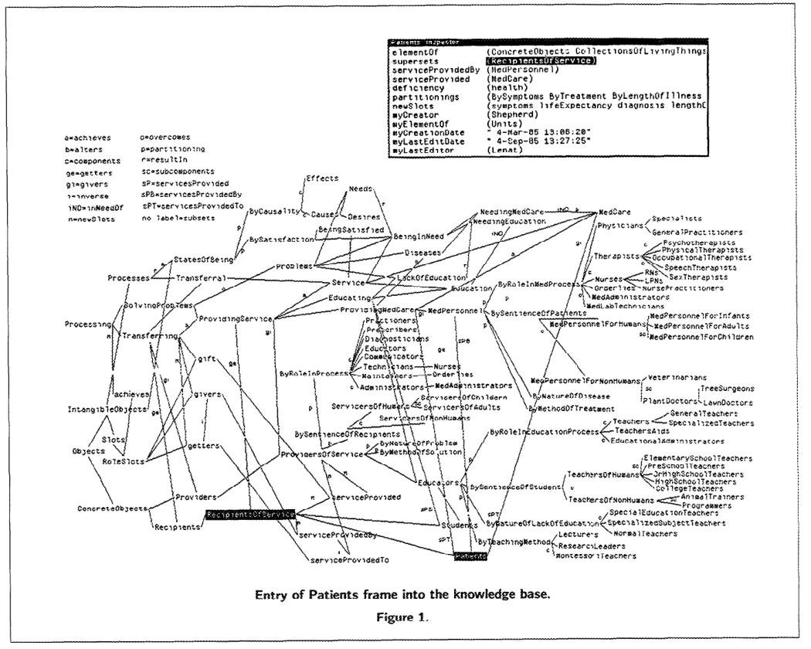
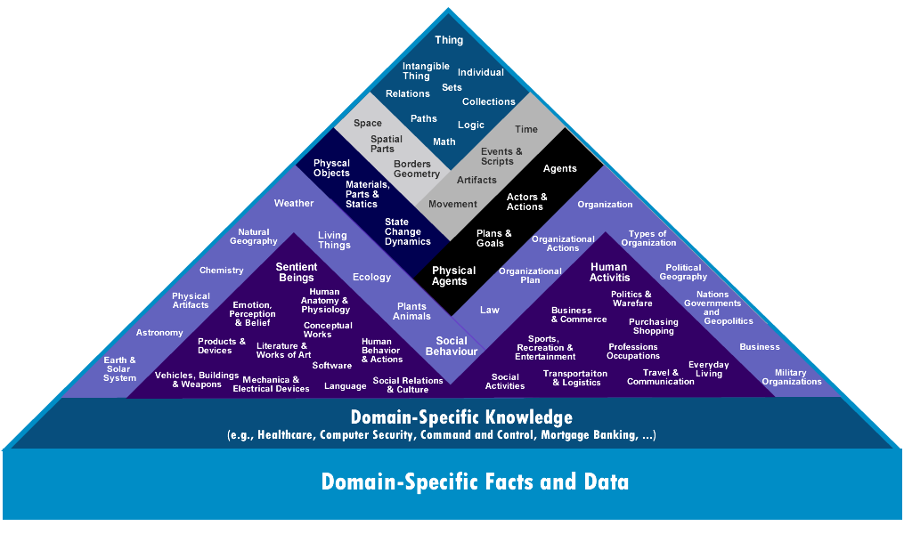
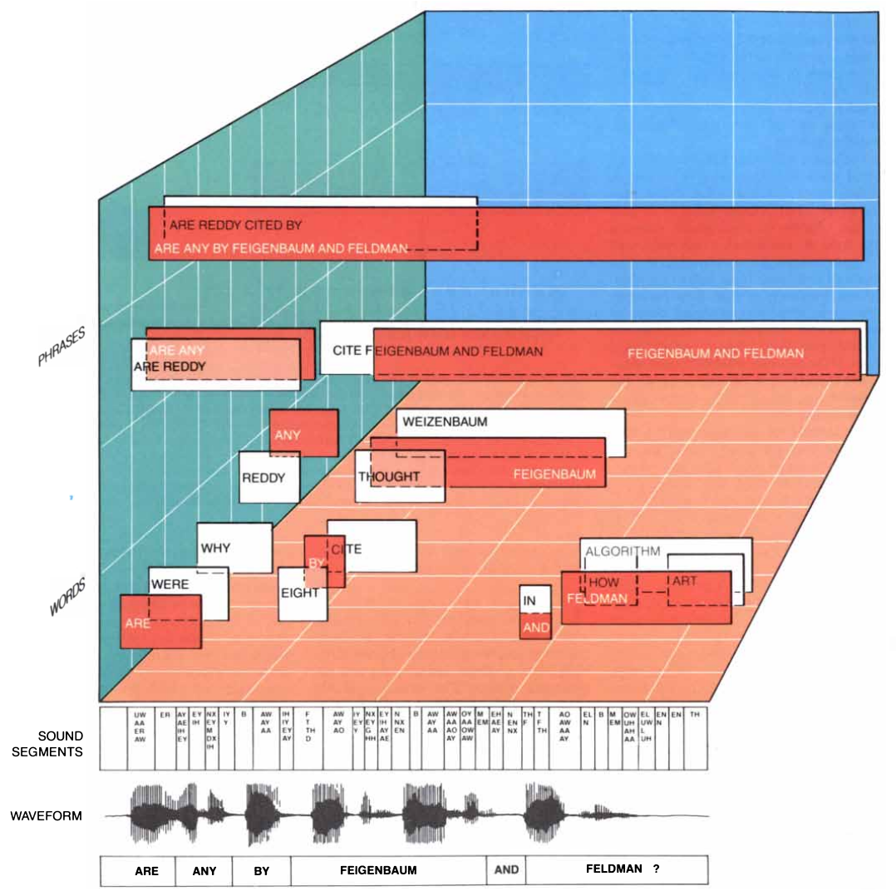

Abstract
The legendary Cyc project, Douglas Lenat’s 40-year quest to build artificial general intelligence by scaling symbolic logic, has failed. Based on extensive archival research, this essay brings to light its secret history so that it may be widely known.
Lenat’s journey began with his PhD work on automated mathematical discovery through heuristic search. He observed that such systems initially make promising discoveries but quickly “run out of steam” as they exhaust their initial pool of heuristic rules. His follow-up system EURISKO, famous for winning tournament competitions by finding unconventional tactics, faced similar limitations. These experiences convinced Lenat that true AI needed a vast foundation of common sense knowledge to avoid intellectual exhaustion.
In 1984, he launched Cyc to manually encode millions of facts and rules about common sense, predicting that once this “knowledge pump” was primed, the system would begin true machine learning by reading natural language texts and conducting autonomous scientific experiments. Cyc grew to contain approximately 30 million assertions at a cost of $200 million and 2,000 person-years. Yet despite Lenat’s repeated predictions of imminent breakthrough, it never came.
In terms of funding, Cycorp was probably half-funded by the military and intelligence before 2010, and entirely funded by commercial applications since 2016. Cycorp achieved long-term financial stability that is uncommon for a small technology company, but all known commercial uses of its system involve standard methods in expert systems, data integration, and information retrieval, functionally the same as similar services offered by established corporations like Oracle and IBM. No evidence suggests that Cyc’s purported higher intelligence provided any competitive advantage.
By academic standards, the Cyc project is highly insular. Publications involving Cyc typically described methods for entering information into the system, rarely addressing applications out of it. Outside Cycorp, Cyc saw minimal use in AI research or even in knowledge retrieval, its most adjacent field. Academics found the system difficult to use, and it never performed on public benchmarks. Spin-off projects like OpenCyc and various semantic web initiatives all eventually shut down without notable success.
The secretive nature of Cyc has multiple causes. Lenat personally did not release the source code of his PhD project or EURISKO, remained unimpressed with open source, and disliked academia as much as academia disliked him. Most open information concerning Cyc had been deliberately removed circa 2015, at the moment when Cycorp pivoted to commercial applications.
Lenat had a single philosophical vision for AI that he pursued for 40 years. Guided by it, he had consistently rejected every alternative vision for AI, including the heuristic search approach, the expert systems approach, the robotics approach, and the neural network approach. All were rejected as either “shallow pattern-matching” seeking a “free lunch” on one end, or a “mystical worship of physical embodiment” on the other end.
As of 2025, 9 years after the knowledge pump had been primed, there is still no sign that Cyc would ever achieve general intelligence.
More archival material available on GitHub.
In lieu of an introduction
Many years later, surrounded by the humming servers of the knowledge base, Douglas Lenat was to remember that distant afternoon when he taught Cyc that everyone can only see their own dream.
Automated Mathematician
In the land of AI, there had been legends, of people and systems that were before their time, that showed sparks of brilliance but without followups, and Douglas Lenat was a man of three.
Lenat’s first legend was his Automated Mathematician (AM), a system that, according to the legends, discovered mathematical concepts autonomously by distilling concepts out of patterns and remixing and stirring together previous concepts (D. B. Lenat 1976). As we will see, this legend is mostly true, though with a caveat that leads to the topic of his second legend.
AM was his 1976 PhD thesis project, and it was one of many “automated discovery” systems in the 1970s – the only one still remembered nowadays. Though neural networks and other “self-organized” machine learning methods had mostly died out in the 1960s, machine learning did not die, and indeed, was going through a logical spring, under the banner of “automated discovery”.
Automated discovery
Nowadays, when we think of “machine learning”, we think of random forests, neural networks, and such. But back then, machine learning was understood as “logical AI gone meta”. Well, to go meta, we must first understand: What is logical AI? Simon and Newell, the two giants of logical AI, had shown the way: logical AI is heuristic search.
- To play chess, one simply writes a program that does alpha-beta search over the game tree, guided by heuristics of piece-worth, mobility, and such.
- To solve planar geometry problems, one simply writes a program that constructs a path in the space of geometric arguments, until one connects the axioms with the conclusions.
- To solve problems of type X, one simply writes a program that walks through the space of possible solutions to X, and code in the heuristic rules, its north star, so that it will not be lost in the space of solutions.
Well, chess is a game, and so is Euclidean geometry, symbolic integration, and… perhaps scientific discovery itself? The famed scientific method, to deserve the name “method”, ought to be just one more problem for logical AI to solve. It merely remained to go meta, to heuristically search over the space of heuristic searches.
During 1977–1983, Pat Langley wrote a series of programs named BACON, after Francis Bacon, a father of scientific empiricism. It purported to discover scientific laws from mere data. For example, when given a table of the moles \(N\), pressures \(P\), volumes \(V\), and temperatures \(T\) of gas samples, BACON would first try out simple equations involving two of the terms. It would discover that the data for \(PV\) appears more cluster-like than either \(P\) or \(V\), so it would make a new quantity \(PV\), and add that to the table. It would then repeat this process, discovering that \(PV/T\) is an interesting quantity, and finally that \(PV/NT\) is a constant quantity – the ideal gas law discovered! (Langley 1981)
In the logical AI framework, the problem space of BACON is the space of all elementary functions involving the table columns, and a solution is a (nontrivial) function that results in a nearly constant column. At each step, the program tries out simple combinations of the current columns, and heuristically pick the one most nearly constant.
As another example, consider the famed Dendral and Meta-Dendral.
Dendral was an artificial model of how professional chemists perform molecular spectroscopy – that is, how they read out a molecular structure from looking at a few spiky curves. Its problem space is the space of all possible ways to cut up a molecule into fragments, and ways for the fragments to give and take their atoms. Its heuristics are the rules for generating chemically plausible and implausible cleavages and transfers. For example, it is plausible for a protein to be cleaved at the -CO-*-NH- peptide bond, but implausible to be cleaved at the double bond between C and O. The goal is, given molecular spectroscopic data for a single molecule, to construct a molecular structure and a sequence of cleavages and transfers, such that it would produce the data.
With Meta-Dendral, the problem space goes meta, becoming the space of possible chemical rules. Its goal is to find plausible rules (plausible according to heuristic meta-rules) that can explain a large collection of molecular structures and their spectroscopic data. Meta-Dendral proved useful for working chemists by discovering some cleavage rules for a certain minor sub-family of androstanes. (Buchanan and Feigenbaum 1981)
In general, such a system begins with some simple rules that allow the system to a low score according to some criteria. and as it runs, it builds, prunes, and modifies the rules, so that in the end, its rule set allows it to achieve a high score. The following tabulates a few (Walker 1987):
| System Name | Date | Task | Data | Rules | Discovery Method |
|---|---|---|---|---|---|
| Meta-Dendral | 1976 | Discover molecular cleavage and transfer rules for mass spectrometry | Molecular structures and their spectra | Molecular cleavage and transfer rules | Use meta-heuristic rules to generate possible rules, and test on data |
| Bacon | 1977–1983 | Discover physical laws | Numeric data from experiments | Elementary functions | Symbolic regression |
| RX | 1982 | Discover drug side effects and interactions | Patient information database | Drug effect and interaction rules | Symbolic regression with time-lag |
The working of AM
The honor of your machine is preserved.
— Paul Erdős, after examining (D. B. Lenat 1976, appendix 4).
Within this context, AM is different. It is still a logical AI with a problem space and a heuristic search. However, there is no data: It was mostly “self-play”.
To start AM, Lenat began by entering 115 concepts in set theory and ~250 heuristic rules, and thence AM ran, discovering more and more constructions. Most would be trivial, but a few would be interesting, and these interesting constructions would be stored, allowing further constructions upon them. It secured a place as a minor legend, reportedly rediscovering many concepts, such as the natural numbers, the prime numbers, and the Goldbach conjecture.
A concept is essentially a frame, which are essentially objects in object-oriented programming. A concept has 25 possible facets, which are “slots”, or “data fields”. Not all need to be filled.
The following is an example concept with many facets populated (D. B. Lenat 1983c, table 9.9):
NAME:Generalize-rare-predicateABBREVIATION:GRPSTATEMENT:English: If a predicate is rarely true, Then create generalizations of itIF-potentially-relevant:IF-just-finished-a-task-dealing-with: a predicatePIF-about-to-work-on-task-dealing-with: an agendaAIF-in-the-middle-of-a-task-dealing-with: neverIF-truly-relevant:Preturns True less than5%of Average PredicateIF-resources-available: at least10CPU seconds, at least300cellsTHEN-add-task-to-agenda: Fill in entries forGeneralizationsslot ofPTHEN-conjecture:Pis less interesting than expectedGeneralizationsofPmay be better thanPSpecializationsofPmay be very bad
THEN-modify-slots:- Reduce Worth of
Pby10% - Reduce Worth of
Specializations(P)by50% - Increase Worth of
Generalizations(P)by20%
- Reduce Worth of
THEN-print-to-user:English(GRP)with “a predicate” replaced byPTHEN-define-new-concepts:
CODED-IF-PART:λ(P) ... <LISP function conjoining all the IF- parts>CODED-THEN-PART:λ(P) ... <LISP function appending all the THEN- parts>CODED-IF-THEN-PARTS:λ(P) ... <LISP function combining the previous 2 slots>COMPILED-CODED-IF-THEN-PARTS:#30875SPECIALIZATIONS:Generalize-rare-set-predicateBoundary-Specializations:Enlarge-domain-of-predicate
GENERALIZATIONS:Modify-predicate,Generalize-conceptImmediate-Generalizations:Generalize-rare-contingent-piece-of-knowledgeSiblings:Generalize-rare-heuristic
IS-A:HeuristicEXAMPLES:Good-Examples: GeneralizeSet-EqualityintoSame-LengthBad-Examples: GeneralizeSet-EqualityintoSame-First-Element
CONJECTURES: Special cases of this are more powerful thanGeneralizationsGood-Conjec-Units:Specialize,Generalize
ANALOGIES:Weaken-overconstrained-problemWORTH:600VIEW:Enlarge-structureORIGIN: Specialization ofModify-predicatevia empirical inductionDefined-using:SpecializeCreation-date:6/1/78 11:30
HISTORY:N-Good-Examples:1,N-Bad-Examples:1N-Good-Conjectures:3,N-Bad-Conjectures:1N-Good-Tasks-Added:2,N-Bad-Tasks-Added:0Avg-Cpu-Time:9.4seconds,Avg-List-Cells:200
| means “is a”. ||| means “is an example of”. (D. B. Lenat 1976, 106)AM has an agenda: a list of tasks, each with a list of reasons for the task. Each task is of the form “Perform operation O to facet F of concept C”. A task’s Worth is the sum of its reasons’ worths. AM always performs the task with the highest worth.
To perform a task, AM looks for heuristic rules whose conditions are (mostly) satisfied, and whose worth is (pretty) high. Each heuristic rule is of form “if <condition>, then run <actions>”. Each action has 3 kinds of possible effects:
- Add a new task to agenda.
- Create a new concept.
- Add or delete an entry to a facet of a concept.
Some example heuristic rules:
- If the task is to fill in examples of X, and X is a special case of Y, then for each example of Y, check if it a definition of X. If so, then add it to the list of examples of X.
- If some but not most examples of X are also examples of Y, then create a new concept “X and Y”.
- If very few examples of X are found, then add the following task to the agenda: “Generalize the concept X”, for the following reason: “X are quite rare; a slightly less restrictive concept might be more interesting”.
At this point, the careful reader would notice several problems:
How does AM know that the concept should be called “Prime Numbers”? Ah, that’s because Lenat would regularly interrupt and inspect AM, and if Lenat notices that AM has rediscovered, say, prime numbers, he would rename that from something like concept-421 to prime-numbers.
To discover prime numbers, AM must have a way to check if a Lisp object is a prime number or not. That is, the definition must also be a program. So…? Ah, the famous homoiconicity of Lisp came to the rescue! A definition, as stored within a facet of a concept, is a data, but for Lisp, data is program, and program data. Consequently, AM can run a subroutine that enumerates possible programs as data, and for each, interpret it as program, until AM hits upon a program that works (or times out).
How does it check that two definitions actually define the same thing? In general, this is impossible by Rice’s theorem, so Lenat must have used some heuristic rules. I looked, but can’t find Lenat explaining this anywhere. It seemed like a trick of the hand.
But most serious of all issues is that the most critical part of AM was not the concepts it discovered – after all, mathematicians did not need a computer to inform them that prime numbers are interesting. The most critical part was surely the heuristic rules by which AM worked, and many were entirely hand-waved. The most detailed description was in (D. B. Lenat 1976, appendix 3), and it is still not described to a level of detail that may allow reimplementation.
Consider rule 75: “A constructive existence conjecture is interesting if it is frequently used.” How frequent is “frequent”? What threshold of frequency triggers the increase in interestingness, and by how much? There are even vaguer rules, such as rule 69: “Formulate a parameterized conjecture, a ‘template’, which gets slowly specialized or instantiated into a definite conjecture.”.
Now, these would have not been a problem if AM was just a forgotten system, but it was not. The achievements of AM was impressive enough that it was an instant celebrity among the AI people, winning an IJCAI Award just 1 year after publication (D. B. Lenat 1977). Anecdotes even suggested that the AI mathematician was here:1
1 This anecdote corroborates (D. B. Lenat 1976, appendix 4.6).
On one memorable occasion, one of my advisors, George Polya, was looking at its results, and remarked “That reminds me of something a student of a friend of mine once did.” He rummaged through an old trunk, found the relevant correspondence, and it turned out that his friend was G. H. Hardy, and the student was Srinivasa Ramanujan! Even though that regularity (involving highly composite numbers) has no practical significance, Polya and I were happy to see AM behaving much like the young self-taught Indian genius had, in his explorations in search for interesting regularities.
The end of AM
The swirling controversy came to a head with the publication of (Ritchie and Hanna 1984), which argued that AM was badly documented. That, its control structure probably was not “simply pick the task with the highest worth”, but more complicated. This called into question the Lenat claim that the heuristic rules were the load-bearing parts of AM, which Lenat had implied by emphasizing its almost trivially simple control structure. Further, some crucial quantitative heuristic rules were probably hidden behind vague qualitative handwaves like “A nonconstructive existence conjecture is interesting” (rule 74). Now, handwaving would have not been a problem if they were intended as merely glosses over the source code, but the source code was also unpublished, making it impossible for other other researchers to reproduce or extend the work, or to reinterpret AM’s workings.
In short, because of the various issues, AM was an event that happened, but not an entity that could be built upon. One could not build upon it directly in source code, since it’s unavailable. One could not build upon it by reimplementing the pseudocode, since the rules were vaguely specified, and the control structure was probably wrong. One could not build upon it by reimplementing the high-level ideas, since it’s unclear which part, out of the several dozen tightly integrated parts of AM, was responsible for AM’s good outputs, and which were just implementation details. In our language, there was no ablation study.
Lenat quickly replied with (D. B. Lenat and Brown 1984). He dismissed the criticism as mostly miscommunication, and went on to describe the real lesson of AM. If I were to be dab, Lenat was saying that it is fine for AM’s source,2 or even pseudocode, to be unavailable, because Lenat had learned the lessons, and you, dear reader, need only listen to the lessons from him.
2 Though Lenat admitted that “the code ought to have been provided” (D. B. Lenat and Brown 1984) for AM, he would never publish the code, not with AM, nor with EURISKO. He had often claimed it had been long lost, yet the source code for AM and EURISKO had recently been found, right where it should be – the DBL folder in the Stanford AI Laboratory backup data. It could only be found because Lenat had died, thus releasing the password protection on the folder. I wonder if Lenat had lied, and simply wished to protect his source code. It would correlate with his later behavior.
The AM thesis never explained, precisely, how concepts such as ‘not very often’ and ‘related to’ were implemented. By and large, these omissions were due to the fact that the code Lenat wrote for these predicates was quite trivial… inevitable, yet regrettable process of simplifying large pieces of code, translating them to brief English phrases. This process left out many exceptional cases, and made the English condensations less accurate… Some problems that Ritchie and Hanna cite… are simply errors of mis-reading what was stated in the thesis or articles… A few of the problems raised in Ritchie and Hanna’s article are, annoyingly, genuine inconsistencies in the thesis document, such as whether or not facets had subfacets. These reflect the fact that AM was a running and evolving program, changing daily in small ways even as the thesis document was being written… the changes in representation were driven simply by AM’s running out of list space in 1975 INTERLISP code; we were forced to shift representations time and time again just to gain a few hundred precious list cells.
And what were the lessons?
1th lesson: AM exhausts itself. Roughly speaking, each new interesting discovery depends on ~24 heuristics, and each heuristic has a hand in ~24 discoveries. Therefore, with ~N heuristic rules, there would be ~N interesting discoveries. Because AM cannot discover heuristic rules, with ~300 starting heuristic rules, it would run out of interesting discoveries and “die of boredom”. Lenat could help AM by adding new heuristics, and AM would make some new discoveries, but this never lasted.
Eventually, AM acquired an uncommon ailment for a computing system: intellectual exhaustion. Having explored the esoteric reaches of mathematics, AM suddenly downshifted into a preoccupation with rudimentary arithmetic. Finally, with the remark, “Warning! No task on the agenda has priority over 200.”, the system virtually expired, as though from boredom.
2th lesson: Representation matters a lot. AM worked so well for mathematics, because AM used Lisp code as data. Lisp is the perfect tool if you want to search over the space of interesting mathematical functions. You can modify a Lisp expression, and get a different mathematical function that is possibly interesting. In contrast, if you were to modify assembly code, you’d most likely end up with nonsense. Indeed, Lenat found that he could not extend AM to “go meta” and discover new heuristics, because Lisp is good for math, not “heuretics” (the study of heuristics). Modifying a Lisp expression for a heuristic most likely ends up with nonsense, much like modifying assembly code for a mathematical function.
It was only because of the intimate relationship between LISP and Mathematics that the mutation operators (loop unwinding, recursion elimination, composition, argument elimination, function substitution, etc.) turned out to yield a high ‘hit rate’ of viable, useful new math concepts when applied to previously-known, useful math concepts – concepts represented as LISP functions. But no such deep relationship existed between LISP and Heuretics, and when the basic automatic programming (mutations) operators were applied to viable, useful heuristics, they almost always produced useless (often worse than useless) new heuristic rules.
…
We did not perceive until writing this paper that the way in which
Similar-To,Not-Often,Notice-Regularity, and scores of other ‘primitives’ were coded do themselves embody a large amount of heuristic knowledge. We exploited the structure of (or, if you prefer, partially encoded) the domain of elementary mathematics, in the process of making trivial yet adequate LISP versions of those extremely complex and subtle notions (such as similarity of concepts).
How do we know that Lenat learned the lessons?
EURISKO
Though 1981 is still near, EURISKO is already shrouded in a reverential mystery like legends do, among the Deep Blue, the Samuel Checkers Player, and the apprentice’s broom. A symbol, a moral archetype. A program that discovered loopholes in a sci-fi ship-building tournament, allowing its creator to win twice in a row using fleets so unaesthetic that the people running the tournament threatened to stop the tournaments if it would win thrice, so it retired, the Honorary Admiral, EURISKO the Undefeated.
Brilliant, dramatic, but what do we glean from it, other than a moral play about the power of thinking sideways and seeing through? Quite a lot.
The lessons
As we saw, AM raised many questions, and Lenat wrote EURISKO to answer them. Specifically, he wanted to see if EURISKO could avoid intellectual exhaustion if it could also discover heuristics. If AM exhausted itself because it has used up the worth of its heuristics (1th lesson), then why not let the computer discover more heuristics? Since AM could not efficiently search over heuristic rules using LISP (2th lesson), Lenat designed a new language called RLL (“Representation Language Language”), over which heuristic rules are efficient to search.
As in AM, each heuristic in EURISKO had a level of Worth. Higher-worth heuristics were more likely to be invoked. Each heuristic had a CreditTo, so that if a heuristic rule rose in worth, its CreditTo would also rise in worth. When EURISKO was born, and saw itself, all the heuristic rules it had were branded with CreditTo = DBLenat, but this would soon change, as heuristics begat heuristics.
Yet while Lenat solved the problems raised by the first two lessons of AM, EURISKO failed, from which Lenat learned two further lessons. As we will see, it turned out that EURISKO did exhaust itself eventually after all. Self-discovery of heuristic rules eventually ceased, because self-discovery of heuristic rules relied on meta-heuristic rules about heuristic rules, and those rules run out of steam after a dozen or so uses.
Lenat concluded that he could program 100 heuristics and get a system that could discover 1000 rules, or program 100 meta-heuristics and get a system that could discover 1000 heuristics and 10000 rules, but none of these would be truly autonomous, and Lenat wished for more. He wished for something that could be an equal to humanity, that would grow up and explore into the great beyond, where it could no longer rely on humans for help. Lenat concluded that there really is no way to get a working automated discovery program without doing the hard work of hand-coding in a lot of common sense, and that there would be a point at which this system would finally achieve escape velocity, and would never be exhausted again.
Why would common sense help? Lenat observed how humans don’t seem to get stuck like EURISKO. He concluded that humans don’t run out of steam because they have a vast store of common sense knowledge about the world, from which they can draw upon for analogies, those far-flung flights of fancies that, in sufficient quantities, allow them to generate genuinely new ideas endlessly. For example, one can draw a line of analogy between the military and the medical, so that a doctor can “fighting an infection by an encircling movement with antibiotics”. This is the 3th lesson.
Why would analogies give genuinely new ideas? Well, intelligence is messy! If everything is so uniform, then there is no way to make a far-flung analogy – everything is pretty much the same already. Besides, just look at all the broken dreams of logical AI – their corpses tell us that no elegant theory of intelligence exists. Programming a genuine AI is a messy job. Messiness is a hideous strength. This is the 4th lesson.
The apparent adhoc-ness in both the heuristics’ content themselves, and in the control knowledge guiding the application of those heuristics, is clearly the source of many methodological objections to the work. But we believe that this adhocracy – indeed, adhocracy controlling adhocracy – may be the source of EURISKO’s underlying potential especially as a model for cognition.
Those are the lessons Lenat drew, but what did EURISKO really do?
Other than winning the sci-fi naval battle tournaments, EURISKO also worked on number theory, set theory, simulation of evolution, and metal-oxide (MOS) design. In MOS, it designed some new circuit elements that were verified by physical fabrication, such as a more efficient flip-flop that was “difficult to produce masks for and difficult to fabricate, but extremely small and fast”.
Lenat had a novel idea about how evolution works, one that I have not seen anywhere else. His idea was that purely random mutations are too slow for evolutionary progress, so that evolution must have gone “meta” as well. A substantial portion of the genome is probably not coding for direct protein transcription, but rather for a kind of heuristics, so that instead of trying out all possible mutations, evolution only tries out mutations that are likely useful. And of course, this would have gone meta, with meta-heuristic genes coding for useful ways to mutate the heuristic genes. (D. B. Lenat 1980)
Here is a mechanism which embodies the heuristic “If a gene has mutated successfully several times in the recent past, then increase its chance of mutating in the next generation, and conversely.” All we need to posit is that somehow a short, noncoding sequence—we’ll call it an asterisk—is added to a gene each time it mutates [and] some mechanism (for example, stereochemical) whereby genes with many asterisks are more likely to be mutated, duplicated, and so on, than genes with few or none. Since the asterisks provide no specific benefits to the individual, they will gradually be lost over time, so that when a gene no longer should be mutated, its asterisk count will slowly decline over several generations.
…
… recombination among introns modulates the evolution of a gene. Let’s look at an example of this: it is extremely important to keep the
a,b, anddglobin genes separate, but their internal structure is very similar. To inhibit recombination, the spacers between them can be made very different, and the introns within them can diverge dramatically (since mutations in introns are not as deleterious to the functioning of the gene as mutations to the coding regions). In fact, there is evidence that both of these kinds of divergence do occur for the globins.
At the start, only random mutations would be selected for, but eventually heuristics would arise that create likely advantageous mutations, and then evolution would go meta by one level: it would select for good heuristics. Over the natural history of earth, this can go meta for as many levels as time allows.
The paper goes into further speculative details, and makes a half-humorous–half-horror suggestion that perhaps evolution has worked for so long that the genome now contains a sophisticated intelligent designer, bootstrapped from the billions of years of heuristics-upon-heuristics backstopped by natural selection. The tiny designer would design the progeny’s genome, so that almost nothing in the mutation is “random”.
Since it has an expectation of how things “should go”, it might regard the human experiment as a failure because humans are driving the natural world so far out of its expectation. For example, the designer might have learned a rule “If the environment temperature is varying outside of 20 ± 10 °C , then undo the previous mutation. We have clearly created an offspring that is wandering too much.”, then it would find the human experiment a big mistake and start mashing the undo button.
By now a large knowledge base may exist about ecology, geology, glaciation, seasons, gravity, predation, symbiosis, causality, conservation, behavior, evolution and knowledge itself. In a small number of generations, man has managed to invalidate many of these bits of knowledge, this model of the world. If the heuristics can trace this breakdown to the increasing size of our brains, they might take quick corrective action, preserving homeostasis and the validity of their knowledge base by drastically decreasing human brain size over just a few generations. While this is of course a fanciful tongue-in-cheek extreme case, it (and the longer example above) demonstrates the power, the coordination, that a body of heuristics could evince if it were guiding the process of evolution.
Imagine a species getting so good at adaptation that it is considered a mistake and thus undone. Wouldn’t that be the greatest joke of nature?
But we’re really here to hear about the cool naval battles, not more abstract logics. Unfurl the photonic sails. We go.
The Evervictorious
Lenat did not describe why, one July 4 weekend of 1981, he and EURISKO decided to enter the The Trillion Credit Squadron tournament. Perhaps for glory, or the thrill of the hunt. In any case, they did, and thus carved their legend.
The tournament was for the tabletop RPG game Traveller. Despite purportedly about space battles in a galactic empire, the game was essentially just a simplified version of WWII-era navy battles draped in space-opera garments. In the tournament, pairs of starship generals line up their fleets and fight until one side loses all their ships or surrenders. Each fleet must be built within a budget of 1 trillion credits (thus the name), 100 ships, and under certain other minor constraints.
At the start, Lenat went through the rule books and coded the rules into EURISKO. Then, every evening EURISKO would run through its tasks, including Traveller games, MOS design, math problems, and so on. And every morning, Lenat would check on the last night’s results, remove some heuristics that EURISKO discovered that he deemed bad, and add some others. Manual intervention was necessary since otherwise EURISKO can be stuck with bad heuristics for a long time, and because of weird meta-bugs. Lenat estimated that the final EURISKO had accumulated 1300 CPU-hours of runtime in total on a Xerox 1100 Lisp machine, and the Traveller win was “60/40% Lenat/EURISKO”.
Some heuristics that Lenat hardcoded at the start were:
- R7 (diagonal functions are interesting): If \(f\) is an interesting function of type \(A \times A \to B\), then \(g(a) := f(a,a)\) is possibly an interesting function of type \(A \to B\), and should be studied.
- R9 (extremal sets have possibly interesting preimages): If \(f: A \to B\) is an interesting function, and \(S \subset B\) is extremal in some sense, then \(f^{-1}(S)\) is possibly an interesting subset of \(A\) and should be studied.
- R16 (conjecturing): If the first few examples of a concept \(C\) have just been found, then examine a typical one and see what properties it satisfies, then make a conjecture for each of those properties being satisfied by all examples of \(C\).
These were used by EURISKO for fleet design:
One type of craft which is commonly included is a fighter, which is carried into the area by a carrier… Following R7, the possibility was considered of building fighters that could transport themselves into the battle area; due to the way the constraints were set up, this turned out to be a very powerful–if bizarre–design tactic. Essentially, each fighter was equipped with just enough ‘sailing’ and ‘launching’ equipment for it not to need a carrier. Once airborne, this excess equipment was jettisoned… This design tactic caused the rules publishers to modify the constraints, so that in 1982 one could not legally build such a thing.
…
The constraints specified a minimum fractional tonnage which had to be held back, away from battle [under the pretense of “fuel tenders”]. R7 caused us to consider using warships for that purpose, and indeed that proved a useful decision: whenever some front-line ships were moderately (but not totally) damaged, they traded places with the tenders in the rear lines. This maneuver was explicitly permitted in the rules, but no one had ever employed it except in desperation near the end of a nearly-stalemated battle, when little besides tenders were left intact. Due to the unintuitive and undesirable power of this design, the tournament directors altered the rules so that in 1982 and succeeding years the act of “trading places” is not so instantaneous. The rules modifications introduced more new synergies (loopholes) than they eliminated, and one of those involved having a ship which, when damaged, fired on (and sunk) itself so as not to reduce the overall fleet agility.
…
In the naval fleet design task, R9 was used quite heavily. The functions \(f\) in that simulated world apply to the design and behavior of fleets and of individual ships:
FleetComposition,Agility,Armor,WeaponVariety,TimeToEngage, etc… the ultimate design did settle on a fleet containing almost all identical ships, each with nearly minimal agility, maximal armor, maximal weapon variety, almost all of which engaged with the enemy immediately, etc. One extremal ship employed in the 1981 tournament was a tiny but incredibly agile ship, with no offense whatsoever, that simply could not be hit. Although this was no longer legal in 1982, a ship with massive offensive capability and no defense was instrumental in that new fleet.…
[For R16,] once a new design was tested in simulated combat, several characteristics of the conflict were noted (speed of victory, final state of the victor, amount of tactical decision-making required, etc.). These were formed into proto-conjectures, which were then tested by subsequent mock battles, and any which held over most of the simulations were believed as empirically valid.
Other than hard-coded heuristics, EURISKO of course discovered many heuristics on its own, such as the “nearly extreme” rule: In almost all fleet design situations, the right decision is to go for the nearly extremal design.
Thus, the final ships had Agility 2 (slightly above the absolute minimum), one weapon of each type of small weapons (rather than 0 or many), the fleet had almost as many ships as it could legally have but not quite (96 instead of 100), etc. Big weapons (enormous spinal mounts capable of blasting another ship to pieces with a single shot) were gradually phased out, in favor of an enormous number of small missile weapons. The fleet had almost all (75) ships of this type though there was one ship which was small and super agile and purely defensive (and literally unhittable by any reasonable enemy ship), and a couple monstrous hulks which had no chance of defense against normal ships, but which had weapons just barely accurate enough to hit any enemy ships that were (of course!) small and agile and purely defensive.
One might have questioned the wisdom of running EURISKO every night on all the problem domains, from Traveller to MOS design, but it found good use of heuristic rules learned in one domain applied to another, what we’d now call “transfer learning”:
In working on the design of integrated circuits, for example, EURISKO stumbled on the fact that symmetry is a desirable property for such chips, although it did not understand why; when it was later instructed to design fleets for the Traveller game, EURISKO decided to make them symmetrical and justified its decision by referring to its earlier experience in designing circuits.
Fortunately for EURISKO and Lenat, the navy battles were “tactically trivial”, thus reducing the task to merely nonlinear optimization. Also importantly, the problem was hard enough, and nonlinear enough, for EURISKO to show its edge over linear programming and human intuition.
with 50 parameters per ship, about 10 values for each parameter (sometimes fewer, often an infinite number), and up to 100 distinct ships to design and include in each fleet, any systematic or Monte Carlo analysis of the problem is unlikely to succeed. In fact, the designers had done a detailed linear programming model of the game, and their computer runs convinced them that a fleet of about 20 behemoths was the optimal design. This was close to the starting fleet design the author supplied to EURISKO, and it was also close to the designs that most of the tournament entrants came up with.
At the 1981 championship, EURISKO’s fleet consisted of 96 ships:
- 75 “Eurisko class” ships, which were very slow, heavily armored, and carried many small missiles, like a sea urchin. They formed the bulk of the fleet, and used for pure attrition warfare. It was discovered thanks to the “nearly extreme” heuristic.
- 7 “Wasp class” ships, which were small (1000 tons) but the most agile (Agility 6). These ships had virtually no offensive capability but were practically impossible to hit, serving as “stalemate guarantors”. If all other ships in EURISKO’s fleet were destroyed, these agile ships would remain, forcing a draw since enemy ships couldn’t destroy what they couldn’t hit. This concept emerged from a serendipitous battle where one side survived by having an unhittable “lifeboat” (the “Bee class”). They were carried aboard the Queller and Garter class ships.
- 3 “Bee class” tiny ships (99 tons), which were the original accidentally-discovered stalemate guarantor, the “lifeboat” that EURISKO incorporated into every subsequent design, even while it refined the concept of the stalemate guarantor into the Wasp class. Despite heavy Armor 10, their Agility 0 made them less effective than Wasps at avoiding enemy fire, but presumably their tiny size made them hard to hit. They were carried aboard the Queller class ships.
- 3 “Queller class” ships. They were specifically designed as hard counters to stalemate guarantors. Each carried a single massive particle accelerator, which was not used by human-designed fleets, since that was ineffective against normally sized ships – but due to its broad beam and ease of aiming, excellent against small targets.
- 4 “Cisor class” ships. These “monstrous hulks” were heavily armored vessels that were also hard counters to stalemate guarantors. It had Agility 0, which means it has no chance of avoiding normal ships, but presumably it would survive long enough to destroy any stalemate guarantor, if any existed on the opposing side.
- 4 “Garter class” ships, which implemented the “warship as fuel tender” concept. They were reasonably agile (Agility 4) and could rotate between combat and reserve roles. When front-line ships became damaged, they would trade places with these capable warships held in reserve, allowing fresh ships to enter combat while damaged ones withdrew for repairs. They were crucial for victory in the final battle.
The fleet was actually precisely reported in The Journal of the Travellers’ Aid Society, #10, pp. 38-9, which Yuxi had transcribed to plaintext (thenceforth “report”). Not being an honorary Admiral, agi convened with a council of 4 other LLMs (Gemini-2.5, Claude-3.7, OpenAI-o1, DeepSeek-R1) to figure out how to correlate Lenat’s verbal description in (D. B. Lenat 1983a) (thenceforth “description”) with the precise report.
In fact, it’s quite confusing even in the original paper. All agreed that the 75 “Eurisko class” ships corresponded to the “Eurisko class” in the report. But that’s where clarity ended.
The “stalemate guarantor” was described as “one ship which was small and super agile and purely defensive (and literally unhittable by any reasonable enemy ship)”. However, in the report, every single class contained more than one ship. There were two classes that seemed like the stalemate guarantor: the Wasp class with 1000 tons and Agility 6, and the Bee class with 99 tons and Agility 0. The Bee class had the smallest tonnage but no Agility, while the Wasp class was second-smallest and had the highest Agility. The Council voted Wasp as the “stalemate guarantor” at 3 Yea (Yuxi, Claude, o1), 1 Nay (Gemini), and R1 abstaining due to the server being busy (abstaining is typical behavior for the Chinese during Big-Five votes). Those who voted “Yea” were unable to respond to Gemini’s objection as to what EURISKO used the Bee class for, and motioned to discuss the second issue.
The hard counter to the stalemate guarantor was described even less clearly, and it seemed like there were two classes of them!
a couple monstrous hulks which had no chance of defense against normal ships, but which had weapons just barely accurate enough to hit any enemy ships that were (of course!) small and agile and purely defensive. … this new ship had moderate size, no armor, the largest possible guidance computer, the slowest possible engines for its size and equipment, and one single, enormous accelerator weapon–a weapon usually ignored because its broad beam glances harmlessly off large armor-plated ships, but which is very easy to aim.
The first hard counter matched both the Cisor class and the Queller class, both of which had over 19,000 tons and Agility 0. The second hard counter seemed like the Garter class, with 12,000 tons and Agility 4.
Yuxi lamented that it would have saved the Council a great deal of trouble if the report had detailed what weapons the ships used, but alas, they only reported on the “batteries”. It was at this point that o1 and Gemini raised that the “Batteries Bearing” did not actually stand for “carrying around electric batteries”, but rather “the angle which the artillery could span its fire”. Yuxi expressed astonishment that they could recall the rules of Classic Traveller. “What a nerd!”, muttered Yuxi. There was no reaction from the others, since the meeting was entirely text-based. Yuxi then sent the entire (Traveller Book 5: High Guard 1980) to Gemini for a translation, in response to which Gemini suggested that Yuxi RTFM, “Specifically, pages 21–37 and 50–52 are crucial.”.
The Council’s final conclusion was that probably there were two types of hard counters, with the Cisor being the “monstrous hulk” and the Queller being the one with the “enormous accelerator”.
Reading Gemini’s statement, Claude raised the issue of what the Garter class was supposed to be. At that point, Yuxi re-attended to the fact that (D. B. Lenat 1983b) described a slightly different fleet, one with “fuel tenders”, which (D. B. Lenat 1983a) did not describe at all. Upon presenting the quote describing “fuel tenders”, Gemini argued that the Garter class is the fuel tender, and the Council concurred.
The Council reached no concensus as to the purpose of the Bee, though some suspected that the Bee was another type of stalemate guarantor, possibly the original accidentally-discovered stalemate guarantor, as described in:
Some of the strangest elements of the final fleet were discovered accidentally rather than as the result of a long, continuous evolution process. The usefulness of a tiny defensive ship was apprehended after a ‘lifeboat’ was the only survivor from one side’s fleet, yet round after round it could not be hit at all. That design was immortalized into a design strategy (“Include one such ship in your fleet!”), and a very general rule began looking for ships that could destroy it.
Yuxi raised one final issue, that of what the fighter “equipped with just enough ‘sailing’ and ‘launching’ equipment for it not to need a carrier” described in (D. B. Lenat 1983b) corresponded to. Gemini concluded that no such thing existed in the fleet as reported, since the 3 Bees and 7 Wasps were the only fighters in the fleet, and they were carried by exactly enough carriers (3 Quellers carrying 1 Wasp and 1 Bee each, 4 Garters carrying 1 Wasp each). Yet the description “This design tactic caused the rules publishers to modify the constraints, so that in 1982 one could not legally build such a thing.” strongly suggested that EURISKO actually used such a ship at one point in the 1981 competition.
Someone suggested that EURISKO may have used more than one fleet design, and only the design used in the final battle was reported. Yuxi acknowledged absent endorsement and motioned that the meeting adjourn.
The final report from the Council is attached.
Whereas most battles took 2–4 hours, EURISKO’s opponents resigned in a few minutes, because typical opponents had around 20 large ships against EURISKO’s 96 ships. Each round would destroy EURISKO’s 15 ships and 5 of opponent’s ships. One round was enough for the opponent to realize this, and resign.
That is, except the very last round, where EURISKO faced against a human opponent with basically the same design, except they didn’t have the stalemate guarantor. So if EURISKO seemed to be losing, it could retreat all its fleet and bring out the stalemate guarantor, repair the fleet to full health, then do it again. EURISKO could keep doing this until a lucky dice roll to win.
Its second opponent did some calculations and resigned without ever firing a shot. The subsequent opponents resigned during their first or second round of combat with this fleet. EURISKO’s few specialty ships remained unused until the final round of the tournament, battling for 1st versus 2nd place. That opponent also had ships with heavy armor, few large weapons, low agility, etc. He was lacking any fast ships or fast-ship-killers, though. The author simply pointed out to him that if EURISKO were losing then (according to the TCS rules) our side need put only our fast ship out the front line, withdraw all the others and repair them, and – once they were finished repairing themselves – effectively start the battle all over again. This could go on ad infinitum, until such time as EURISKO appeared to be winning, and in that case we would let the battle continue to termination. The opponent did a few calculations and surrendered without fighting.
The tournament directors were chagrined that a bizarre fleet such as this one captured the day, and a similar fleet (though not so extreme) took second place. The rules for future years’ TCS tournaments were changed to eliminate the design singularities which EURISKO found. For example, repairing of damaged ships was prohibited, so the utility of the unhittable ship became negligible.
Notice that this complicates the typical narrative about a computer beating out humans. As it turns out, Traveller was just a very exploitable game. Even a human discovered that loophole.
At the 1982 championship, rules were changed to plug the loopholes, and the rules were published only a week before the event. Fortunately, loophole-plugging begat even more loopholes, as any programmer who has ever rush-debugged could attest, and EURISKO’s general heuristics (such as the “nearly extreme” rule) remained valid, so it worked out another winning fleet quickly without needing another 1300 CPU-hours.
Coincidentally, just as the defensive ship made a difference in the 1981 final round, the offensive ships made a difference in the 1982 final round. In each case, their presence caused the opponent to resign without firing a shot… Just as most ‘experienced’ players jeered at the 1981 fleet because it had practically no large weapons, they jeered at the 1982 fleet because it was unarmored and it still had no large weapons, even though the rules changes had made them much cheaper.
Unfortunately, there is no information whatsoever on the composition of EURISKO’s 1982 fleet. It seems to be lost in the star-dust of history.
As one expect from a program reasoning about and making its own rules, it stumbled into meta-bugs. The simplest example was one that kept triggering itself, creating an infinite loop. (Johnson 1986, chap. 10) Others were more amusing.
One of the first heuristics that EURISKO synthesized (H59) quickly attained nearly the highest
Worthpossible (999). Quite excitedly, we examined it and could not understand at first what it was doing that was so terrific. We monitored it carefully, and finally realized how it worked: whenever a new conjecture was made with high worth, this rule put its own name down as one of the discoverers! It turned out to be particularly difficult to prevent this generic type of finessing of EURISKO’s evaluation mechanism. Since the rules had full access to EURISKO’s code, they would have access to any safeguards we might try to implement. We finally opted for having a small ‘meta-level’ of protected code that the rest of the system could not modify.The second ‘bug’ is even stranger. A heuristic arose which (as part of a daring but ill-advised experiment EURISKO was conducting) said that all machine-synthesized heuristics were terrible and should be eliminated. Luckily, EURISKO chose this very heuristic as one of the first to eliminate, and the problem solved itself.
Often I’d find it in a mode best described as “dead”. Sometime during the night, EURISKO would decide that the best thing to do was to commit suicide and shut itself off. More precisely, it modified its own judgmental rules in a way that valued “making no errors at all” as highly as “making productive new discoveries”. As soon as EURISKO did this, it found it could successfully meet its new goal by doing nothing at all for the rest of the night… I eventually had to add a new heuristic to EURISKO-one it couldn’t modify in any way-to explicitly forbid this sort of suicide.

In his review article, Lenat made a brief philosophical comment that EURISKO is the new perceptron:
… the paradigm underlying AM and EURISKO may be thought of as the new generation of perceptrons, perceptrons based on collections or societies of evolving, self-organizing, symbolic knowledge structures. In classical perceptrons, all knowledge had to be encoded as topological networks of linked neurons, with weights on the links. The representation scheme being used by EURISKO provides much more powerful linkages, taking the form of heuristics about concepts, including heuristics for how to use and evolve heuristics. Both types of perceptrons rely on the law of large numbers, on a kind of local-global property of achieving adequate performance through the interactions of many small, relatively simple parts.
The classical perceptrons did hill-climbing, in spaces whose topology was defined explicitly by weights on arcs between nodes (nodes which did straightforward Boolean combinations plus thresholding). The EURISKO style of system does hill-climbing at both the object- (performance-program) and meta- (control decision) levels, in spaces whose terrain is defined implicitly, symbolically, by the contents of the nodes (nodes which are full-fledged concepts, at both object- and meta-levels). The new scheme fully exploits the same source of power (synergy through abundance) yet it is free from many of the limitations of the classical perceptron scheme.
If this sounds familiar, it is because this Lenat had the same idea as Marvin Minsky, a friend of his,3 and he was writing in 1984, at the second coming of neural networks. Minsky would soon write his Society of Mind in 1986, which the Cyc project resembled, then re-reject neural networks by writing a long epilogue in 1988 to his infamous Perceptrons (1969), often blamed for the first neural network winter. Indeed, Lenat’s objection to neural networks was essentially the same as Minsky’s, if you compare that with Minsky’s epilogue. Lenat’s approach to Cyc was the same as the Society of Mind of Minsky. Reciprocating, Minsky had often called the field of AI “brain-dead”, holding Lenat’s Cyc as the only one worth mentioning. (Baard 2003)
3 I’m not sure where to put this anecdote about Minsky that Lenat told, but I want to put it somewhere:
… when he was at Lincoln Labs about 50 years ago. And in those days computer time was so precious that you submitted a deck of computer cards and the very first card said ‘how many CPU seconds to allow the program to run?’ And so he built a program that essentially would beg for time. So it would say ‘give 30 seconds’ on the job control card, but then once it started, all it would do is sit there for 15 seconds doing nothing. Then it would ring a bell on the Teletype console in the machine room and call the operator’s attention and say ‘I need 20 more seconds please.’ Then it would just sit there for another 15 seconds and do that again and say ‘I need another minute please.’ And so at the end finally after like half an hour, the operator just killed that particular job. And Marvin would storm into the poor operator’s room and say “Hey I put 15 seconds on the job control card. You’re charging me for half an hour of CPU time,” and the poor operator would say “well your program kept asking for it,” and Marvin would say, “it always does that.”
Though now that I’ve finished the essay, this feels like a metaphor for the Cyc project itself.
4 Though Lenat admitted that “the code ought to have been provided” (D. B. Lenat and Brown 1984) for AM, he would never publish the code, not with AM, nor with EURISKO. He had often claimed it had been long lost, yet the source code for AM and EURISKO had recently been found, right where it should be – the DBL folder in the Stanford AI Laboratory backup data. It could only be found because Lenat had died, thus releasing the password protection on the folder. I wonder if Lenat had lied, and simply wished to protect his source code. It would correlate with his later behavior.
Continuing the trend of AM, Lenat never published the source code for EURISKO,4 and indeed, the only known attempt at reimplementation was (Haase 1990), which had no offspring.
The saga of Cyc
He divided the universe into forty categories or classes, which were then subdivided into differences, and subdivided in turn into species. To each class he assigned a monosyllable of two letters; to each difference, a consonant; to each species, a vowel. For example,
demeans element;deb, the first of the elements, fire;deba, a portion of the element of fire, a flame. In a similar language invented by Letellier (1850),5ameans animal;ab, mammalian;abo, carnivorous;aboj, feline;aboje, cat;abi, herbivorous;abiv, equine; etc… children could learn this language without knowing that it was artificial; later, in school, they would discover that it was also a universal key and a secret encyclopedia.Having defined Wilkins’ procedure, we must examine a problem that is impossible or difficult to postpone: the merit of the forty-part table on which the language is based. Let us consider the eighth category: stones. Wilkins divides them into common (flint, gravel, slate); moderate (marble, amber, coral); precious (pearl, opal); transparent (amethyst, sapphire); and insoluble (coal, fuller’s earth, and arsenic). The ninth category is almost as alarming as the eighth. It reveals that metals can be imperfect (vermilion, quicksilver); artificial (bronze, brass); recremental (filings, rust); and natural (gold, tin, copper). The whale appears in the sixteenth category: it is a viviparous, oblong fish.
— Borges, The analytical language of John Wilkins
5 Took some work to figure out what this is. It was by Charles Louis Augustin Letellier, published in 1852. The full title is Cours complet de langue universelle : offrant en même temps une méthode. pour apprendre les langues, et pour comparer. toutes les littératures mortes et vivantes [Complete course in universal language: offering at the same time a method for learning languages, and for comparing all literatures, dead and living].
Unfortunately, EURISKO ran out of steam just like AM. Taking the 4 lessons of AM and EURISKO, Lenat concluded that there would be no free lunch. Intelligence is a lot of work. You need to put in the right representational language for reasoning and discovery – not just about Lisp or RLL or mathematics, but a lot more. You need to put in a lot of loosely organized, kind of correct heuristic rules – not just a few eternal truths of discovery. You need to put in a lot of facts. You need to interact with the program, to help it along and to be helped along, not just to sit and watch.
So Lenat began paying for his lunch.
In 1984, he started the Cyc project, an ambitious attempt to scale symbolic AI up to the real world. Like most expert systems, the Cyc project consists of a giant knowledge base that encodes all of common sense, upon which inference engines run. Unlike most expert systems, the ambition of Cyc was universal: Its knowledge base would not be restricted to expert knowledge in a particular domain, but all common sense knowledge in all domains that humans have ever common-sensed. It would take a decade, but considering the payoff, it would be completely worth it.
AI has for many years understood enough about representation and inference to tackle this project, but no one has sat down and done it… only by pulling together the latest human interface tools, Lisp machines, ideas of enforced semantics, and funding for a decade-long effort could we attempt a project of this scale.
The game plan was simple:
- “Prime the knowledge pump” by manually encoding a large enough knowledge base of common senses in a logical language. Also, construct a translator between the logical language of the Cyc and the natural language of humans.
- Obtain an AI with common sense and natural language, allowing it to learn by reading what people have written down and conversing with people.
- When it reaches the human frontier of knowledge, it will start performing experiments to go beyond it.
This would solve in one go three problems that plagued the 1980s expert systems:
- No more of the famous brittleness of expert systems, such as stating that a rusty car had measles just because the user stated that it had reddish spots, because Cyc would have all the common senses.
- No more of “running out of steam” like EURISKO and AM. Once it has enough knowledge, it would be able to machine-learn, and thus get past the knowledge bottleneck.
- No more of siloed experts unable to communicate across the vast gap between their little knowledge domains. Expert systems would finally be able to talk with each other if they would all be based on Cyc’s universal knowledge base.
A metaphor that Lenat had used often is that of priming a water pump. The more knowledge Cyc has, the easier it is for Cyc to learn more. At first, it must be spoon-fed knowledge with every entry entered by hand. As it builds a basic understanding of the world, it would be able to parse sentences half-way from natural language to logic, and the ontologists would help finish the job, and the more it knew, the better it could parse, saving more time, until it would start parsing without human help. On that day, the “knowledge pump” would finally, triumphantly, be primed, and Cyc would start pumping and pumping, and more knowledge would just keep pouring out without any exhaustion, ushering a new golden age.
Cyc by 1993
The first published plan of Cyc was in 1985 (D. B. Lenat, Prakash, and Shepherd 1985), with 3 stages:
- (1985–1988): by hand, encode 400 encyclopedia articles. They estimated there are about 400 “kinds” of articles, and they planned to get one in each kind.
- (1988–1993): encode 30000 encyclopedia articles. This step should be fast, since each new article can be copy-and-edited from a previously encoded similar one.
- (1993–?): use Cyc to solve AI problems and apply Cyc for commercial purposes.
They noted that most articles had just 1 paragraph, and 1 paragraph took about 1 person-day to encode, which allowed them to estimate that phases 1 and 2 would take 150 person-years to complete, so with a crew of 20, the plan seemed doable.
At this point, Cyc was still based on frames, like AM and EURISKO. Each frame corresponded roughly to a concept. Each new article encoded took “dozens” of new frames, but they expected it to drop to around 0.1 frames per article after the first 1000s of articles, indicating they expected the final Cyc to contain about 50K concepts.
Such a project was way beyond a typical academic project, or even a commercial project. Fortunately, the Japan scare of the 1980s created a flood of funding for AI projects, and Cyc got funding for the next 10 years, freed from both academic and commercial interests.

5 years later, Lenat optimistically wrote the “midterm” report that the project was still on schedule, that the knowledge pump would be primed by 1995. (D. B. Lenat and Guha 1990)
The most important change was what Lenat called “from the black to the white”. Instead of encoding what is written in the encyclopedias, they really should encode what is not written. Encyclopedias don’t teach what everyone knows, but to make sense of it, one must already know what “everyone knows”. What Cyc should have is not the black ink, but the white space around the black ink.
Lenat began building Cyc by setting himself a seemingly modest challenge. He picked a pair of test sentences that Cyc would eventually have to understand: “Napoleon died in 1821. Wellington was greatly saddened.” To comprehend them, Cyc would need to grasp such basic concepts as death, time, warfare, and France, as well as the sometimes counterintuitive aspects of human emotion, such as why Wellington would be saddened by his enemy’s demise. Lenat and a few collaborators began writing these concepts down and constructing a huge branching-tree chart to connect them. They produced a gigantic list of axiomatic statements–fundamental assumptions–that described each concept in Cyc’s database: its properties, how it interacted with other things. “We took enormous pieces of white paper,” Lenat remembers, “and filled walls, maybe 150 feet long by about 8 feet high, with little notes and circles and arrows and whatnot.”
They have also estimated that it takes about 80 minutes to encode a single rule, including the overhead for knowledge elicitation up front, and the overhead for debugging and testing (D. B. Lenat 2022a).
With these lessons learned, they confidently claimed that they have encoded 1M assertions, 50K concepts, with 0.1% of common sense done. They expected that 10–50% was necessary for knowledge pump to be primed, which they expected to be done by 1995 – still on schedule,6 and they looked forward to the day, around 2000, when “no one would even think about having a computer that doesn’t have Cyc running on it” (D. B. Lenat and Guha 1989).
6 Presumably, at that point Cyc would stop imagining everyone is a friend of Lenat but not of gravity. Growing up truly comes with some terrible disillusionments.
When a natural-language understanding researcher was first trying to represent the concept of falling, he translated “X fell” as “Gravity carried X downward.” Elsewhere in his system was a rule that if you fell in a river and could not swim, and had no friends to rescue you, you drowned. Since gravity as a force of nature has neither arms, legs nor friends, it meets its unfortunate – and improbable – end.
… sometime in 1994 or 1995 by Lenat’s hopeful reckoning – Cyc reaches the breakeven level of about 10 million facts. At that point, it will be able to pick up new knowledge more readily by reading than by having knowledge engineers spoon-feed it. A wider information base may also save Cyc from such gaffes as concluding (from everybody it knew about) that all humans in the world are friends of Doug Lenat.
They expected that the finished Cyc would know 1M concepts. Why 1M? They held their own “mini-Dartmouth conference” and found that multiple estimates all suggest the 1M number (D. B. Lenat and Feigenbaum 1991):
- Alan Kay: 30K encyclopedia articles with 30 concepts per article gives 0.9M concepts.
- Japanese Electronic Dictionary Research Project: in several languages, an educated speaker knows about 200K words.
- Marvin Minsky: 0.2M waking hours between birth and age 21. Assuming 4 new concepts per hour, then 0.8M concepts.
- There are about 1 trillion brain cells. Assuming each brain cell is responsible for a one-step inference between two concepts, then there are 1M concepts.
Cyc by 2000
Around 1990, a large rewrite occurred, resetting some progress. This was expected. As Lenat later claimed, they had met about 150 technical obstacles along the way, and had cleared them all away by 1990, and it remained to just add more knowledge. (D. B. Lenat 2009, 2022a) The most important technical obstacles that they conquered were as follows.
Instead of an object-oriented frame-and-slots language like EURISKO and AM, use a fully general higher-order logic language. This is necessary because people can do common sense higher-order reasoning: modals, reflection, pros and cons, counterfactual hypotheticals, contexts as first-class objects in our ontology, several different useful “species” of negation, etc. (D. B. Lenat 2022a)
Instead of searching for the right representation, use as many representations for concepts and rules as you need. Each is represented in at least two ways. This is necessary for efficient inference. Similarly, use as many inference engines as needed, since the general logic engine is too slow. They had already 20 at that point, and they would eventually end up with >1100. (D. B. Lenat 2022a)
Don’t try to make the perfect “upper ontology”. It just has to be good enough. A “suboptimal” one only causes a constant factor \(O(1)\) of waste in computational space and time.
We even wasted quite a bit of time trying to get the very most general tip of Cyc’s concept network “right”… at the 1986 Fifth-Generation Project conference in Tokyo, when we saw the ontology built by Japan’s answer to Cyc, named Electronic Dictionary Research (EDR). Their topmost distinction was between things with souls and things without souls. And large trees were in the former category, whereas small trees were in the latter category… They and their EDR system knew that both types of trees needed water and sunlight and had roots, etc., they just had to represent each of those assertions as two separate rules instead of one, as we did in Cyc. No big deal.
The important lesson was: Making suboptimal ontology choices just means that your ontology and knowledge base might have to be bigger, more verbose, to make up for those missed generalization opportunities.
In the progress report in 1995, they stated that they had manually re-entered in the new language 100K concepts and 1M assertions into Cyc in the new language, at the price of 100 person-years. Furthermore, the knowledge pump was close to being primed, and they expect Cyc to start learning on its own by reading (“natural language understanding”) and discovery (“machine learning”) sometime in the next 10 years. (D. B. Lenat 1995b) In another essay, Lenat optimistically predicted that “The goal of a general artificial intelligence is in sight, and the 21st-century world will be radically changed as a result.” (D. B. Lenat 1995a)
Before this point, the Cyc project was part of a private-public consortium and funded accordingly. After this point, the consortium was mostly over, so Lenat spun out Cyc into a for-profit company, Cycorp, to continue the work. Most academic publications ceased at this point, and I had to rely on OSINT/cyberstalking at this point to piece together what happened afterwords, by watching every Lenat talk, reading every news report, and digging up every gossip by ex-Cyclists in long-dead forums.7
7 Most papers published after that point were slim on details, and mostly about yet new exciting ways for them to ingest more data from the Internet, or about yet more ways to use their knowledge base. I could find no information about how the inference engines worked, and very little details of commercial applications. Most of the “applications” were vaporware, with dead links everywhere.
Cyc in the 2000s
It was 2001. The Internet was thriving even though most dot-com startups had died, and Lenat planned to harness the wisdom of the online crowd – much like Wikipedia, the Free Encyclopedia, which launched in the same year. Cyc at that point had 1.5M assertions, and had begun to be partly “tutored” in natural language by the Cyclists, which was more pleasant than typing everything up in pure CycL. Lenat optimistically predicted that the Internet crowd would be entering 10M assertions in 2002, accelerating from there, so that Cyc would know 100M assertions by 2007, at which point it would know as many things as a typical human. Then by 2011, Cyc would have learned, by reading and chatting with people, all that humanity collectively knows. From there on, Cyc will extend the knowledge frontier by running novel experiments in a research lab. (Thompson 2001; Anthes 2002b) Other reports suggested that AGI, or what he called a “generally intelligent artifact” would arrive by 2020 or 2025. (Port 1997; Lyons 1998)
He draws me a graph that shows Cyc’s learning curve. From 1985 to 2000, the line curves upward gradually – the “brain surgery” phase during which the Cyclists input knowledge by hand. But then at 2001, the curve steepens dramatically as the open-source phase takes over, and thousands – or millions – more inputters join in. Lenat extends the curve maybe ten years into the future. As the curve reaches the point where Cyc has read everything there is to read and spoken with everyone willing to tell it facts, it will begin to flatten out. “It’ll know all there is to know,” he says. “At that point, the only way it could learn more is by doing experiments itself.”
To drum up the support, Cycorp released OpenCyc in 2001, a small subset of Cyc. Lenat planned to migrate everything to the public mode. But OpenCyc would always lag the true Cyc by 24 to 30 months. (Anthes 2002b) Unfortunately, this was not to be the case. The last version of OpenCyc was released in 2012, and it quietly shut down with no fanfare, probably in 2017-03, with a curt message:
Part of the Cyc technology was released, starting in 2001, as OpenCyc, which provided an API, RDF endpoint, and data dump, under appropriate Apache and Creative Commons open source licenses. Its distribution was discontinued in early 2017 because such “fragmenting” led to divergence, and led to confusion amongst its users and the technical community generally that that OpenCyc fragment was Cyc.
OpenCyc was primarily a subset of the knowledge base. As described in the Handbook, the base contained 3 sections:
- The public section was a “large section, constituting much of the Cyc upper-ontology as well as some middle- and lower-ontology”.
- The proprietary section was an “even larger section of the Knowledge Base, subsuming the public release and containing a good deal more, has been sanctioned for release to corporations and individuals who are co-participants with Cyc in various DARPA contracts. This portion of the Knowledge Base is generally referred to as the Integrated Knowledge Base or IKB.”.
- A small classified section was for Cycorp itself, “that should not be released to anyone outside the company. Sometimes, this is because the information is pertinent to commercial contracts that are subject to non-disclosure; sometimes, it is because the terms in question are considered experimental in one way or another, and therefore not suitable for immediate release.”

Concurrent with OpenCyc, there was also ResearchCyc, which contained the non-proprietary parts of Cyc, but only available for research purposes. It shutdown sometime in 2019, without even a curt message.
As one can expect from Lenat’s previous non-releases, there was and has never been any release of Cyc itself, especially because Cyc is a commercial endeavor, as is necessary to sustain the 2000 person-year project.
In 2001, at the start of the Semantic Web hype (the original “Web 3.0”, before it came to mean cryptographic blockchains), Cycorp began seriously engaging with the many Semantic Web initiatives.
Squinting a bit, the visions of the semantic web and the vision of the Cyc were the same: Both wish to draw connections between data, such that computer programs can chain together multiple operations on data, synthesize them, and give the user what they meant, instead of what they literally typed out. Cycorp regarded the semantic web effort as doing essentially the same thing, on the Internet scale, except with a less expressive frame language (not even first-order logic). During the 2000s, papers from Cycorp often talked of integrating Cyc with the semantic web by encoding knowledge in DAML, RDF, OWL, XML, or some other boring acronym.
Cycorp participated in the Standard Upper Ontology Working Group (SUO WG), which, like most Working Groups, petered out in 2003 among motions, procedures, and consensus-buildings, filled with meticulous wisdoms and benevolent safeguarding of the metaphysics of mankind. What it did provide is the earliest copy of OpenCyc I have found, in 2003, which I have backed up for safekeeping.
With the breakout success of the ESP game in 2003, “games with a purpose” were all the rage, so Cyc attempted to keep up with the times with its own FACTory in 2005. It never got out of the Beta version 1.0.1 and shut down sometime after 2012. According to the tutorial, it was a single player game, where the player just selects whether the statement is true, false, doesn’t make sense, or the player doesn’t know. The answers are scored based on the majority of answers. Though Lenat stated in a lecture that they had players that raked up 50 hours a month to the point that Lenat felt concerned about it, I could not find any mention of how much data they have gathered from this game in total. Nevertheless, this appeared to be the only time Cyc crowd-sourced data.
In 2006, Cycorp spun out The Cyc Foundation, a non-profit organization promote the OpenCyc + Semantic Web combo. As usual, nothing ever came of it. The last blogpost went up in 2011-06, and the website shutdown in 2015.

In 2008, Cycorp tried again by putting up a copy of OpenCyc with a user interface and an API, branded as “OpenCyc for the Semantic Web”. The API would allow web agents to call on OpenCyc and use the replies to do Semantic Web things, making it “the backbone of semantic web”… at least that was the hope. An exhaustive Google search turned up zero actual applications. It shut down in 2017 when OpenCyc did.
Though deprived of its purported backbone, from our vantage point, the Semantic Web has arrive as promised, but instead of the dream of Cyc-like thinkers performing long queries over databases, we have forgetful agent swarms talking with each other with API calls, dying, RESTing, and reincarnating, a game of Memento on the global scale.
In 2008, Cycorp tried again by joining the Large Knowledge Collider (LarKC)8 project at Europe, “a platform for massive distributed incomplete reasoning that will remove the scalability barriers of currently existing reasoning systems for the Semantic Web”. The hope was to produce a common knowledge base with over 1 billion triples, such that it can easily be scaled up further, and easy to produce expert systems based on it. A few papers and conferences later, the project ended in 2011.
8 The name is an obvious shade to the Large Hadron Collider, which began operation in 2009 and was briefly in the popular imagination.
There was another blog by Cycorp starting in 2008, that stopped updating in 2011 after 11 unremarkable posts. It was supposedly written by Cycorp, though its style was the same forgettably respectable style as that of the Cyc Foundation and parliamentary proceedings.
There was a Twitter bot @cyc_ai, which started in 2008 and stopped in 2011 after 15764 inane tweets in the format of “I just leaned <statement>, true or false?”. According to Internet Archive, it shut down sometime before 2017.
Cyc is done?
As you might have noticed if you clicked on any of the above links, almost all the links are dead now. By checking the last known good copy of the various websites on Internet Archive, I noticed that there was a “massive extinction event” during 2014–2016, when Cycorp purged most of the open information about Cyc from the Internet. No more OpenCyc, tutorials, references, vocabulary lists, The Ontological Engineer’s handbook (version 0.7)…9 everything was gone, except marketing material. Fortunately, the Internet Archive exists, and I scraped much of the primary material from it and uploaded them to GitHub for safekeeping.
9 There is a funny anecdote about this book:
I coined the phrase “ontological engineer” in the mid-1980’s, shortly after embarking on the construction of Cyc, because I didn’t like the pejorative tone of “knowledge enterer” or “knowledge worker”, and the term “knowledge engineer” had already been taken (to mean someone who builds expert systems). Based on that, when Addison-Wesley published our 1989 Cyc book (Building Large Knowledge-Based Systems), the editor playfully inserted a forward reference, at the front, under Other Publications, to the 1997 Ontological Engineer’s Handbook. Of course the joke was on us when, starting in 1997, we began to be deluged by requests for that nonexistent work.
Why?
I believe it was for commercial reasons. This mass extinction event closely corresponded to the commercialization wave in 2016, when Lenat finally declared the Cyc project “done” and set about commercializing it, both via Cycorp and via Lucid.ai, a company founded a year before.
“Part of the reason is the doneness of Cyc,” explains Lenat, who left his post as a professor at Stanford to start the project in late 1984. “Not that there’s nothing else to do,” he says. But he notes that most of what is left to be added is relevant to a specific area of expertise, such as finance or oncology. Among other projects, [Lucid] is developing a personal assistant equipped with Cyc’s general knowledge. This could perhaps lead to something similar to Siri. … the CEO of Lucid says the new company is in talks with various others interested in using the Cyc knowledge base. Lucid has been working with the Cleveland Clinic, for example, to help automate the process of finding patients for clinical studies.
This timing of commercialization coincides suspiciously with the end of almost all projects except ResearchCyc. Even the documentation went offline in 2016 and could now only be accessed for commercially registered accounts! It looks like a total internal pivot as the company focused on commercialization and shut down all services that were not high priority for the bottom line.
How expensive was the lunch?
After cyberstalking the Cyc for days, I had captured every numerical datapoint that has ever dripped out of Cycorp over its entire existence, and combined them into a spreadsheet that you can analyze yourself. In short, Cyc has grown to 30M assertions over the years, and is still incomplete, if completeness were measured by its original standard – a self-learning AGI. Despite Lenat’s 2016 claim that it was “done”, there is no self-learning or AGI in sight.
Looking at this diagram, we notice 3 things:
One, the growth of assertions is roughly exponential, doubling every 6 years. At this rate, in 2032 Cyc can expect to reach 100M assertions, the hoped-for point at which Cyc would know as much as a typical human. This might be the dream of Lenat, but I bet it will just become a slightly bigger enterprise solution to expertise management.
Two, the cost of human labor has remained stable throughout the existence of Cycorp, at $100K/person-year.
Three, The cost of assertions was $5/assertion from 1990–2010, but $0.7/assertion after 2015, around the time when Lenat declared the project mostly complete. This matches the estimate of (Paulheim 2018). It’s unclear what caused the 7-fold increase in efficiency. Perhaps this is a success of “priming the knowledge pump”, or this might just because after 2015, most new assertions came from adding new assertions specialized to particular commercial applications, and thus were easier to handle. Formalizing business rules already written down is easier than extracting the intuitive metaphysics of fruits vs vegetables, after all. In any case, a 7-fold efficiency improvement over 30 years is unimpressive, and indistinguishable from more prosaic arguments about learning curve effects observed in most industries: The more you make, the cheaper you can make.
Overview of Cyc, the system
The Cyc system consists of three main kinds of parts:
- The iterations of CycL, based on SubLisp, which is itself based on Lisp.
- The knowledge bases, consisting of millions of assertions written in CycL.
- The ~1000 inference engines, written in SubLisp.
To increase speed and compatibility, the programs written in CycL are compiled to Java, which is then compiled to bytecode.
The CycL language is intended to be the high-level language that humans can read and write, at the “Epistemological Level” (EL). Most inference engines do not process CycL directly, but process low-level translations of CycL at the “Heuristic Level” (HL). Each sentence at the EL can be translated into a multitude of HL sentences, since different translations allow different inference engines to process it, so that hopefully at least one of those would process it efficiently. The two sides are connected by an interface called the “Canonicalizer”.

{kind=link}
CycL language
Since the CycL language has had been developed since the late 1980s, and Cycorp published very little, I am basing this section mostly on the Ontological Engineer’s Handbook (version 0.7), which seemed to contain the most details, even though technically it only describes the 2002 version of CycL.
Like Common Lisp, the CycL language has almost no syntax:
- An expression is from one of the following types:
(#$relation <arg1> … <argn>),?variable,#$Term, text string, and rational number. - A
#$relationis either a function or a predicate. It always begins with a lowercase. - If
#$relationis a function, then(#$relation <arg1> … <argn>)is an object, aka a term. Most of Cyc’s knowledge base consists of assertions. Each assertion has a truth value. - If
#$relationis a predicate, then(#$relation <arg1> … <argn>)is an assertion, aka a sentence. Most of Cyc’s knowledge base consists of assertions. - For a few special cases of
#$relationsuch as#$implies,#$forAll, and#$thereExists,10(#$relation <arg1> … <argn>)is a rule of inference. - Each assertion has a truth value.
- There are 5 truth values: default true, monotonically true, default false, monotonically false, and undefined. The “default true” is used to allow for “nonmonotonic reasoning”. For example, it allows us to say that “Pingu is a bird, so Pingu can fly”, and then, if someone else adds “and Pingu is a penguin”, we can say, “in that case, Pingu cannot fly”. Since the “Pingu can fly” statement is only “default true” and “Pingu cannot fly” is only “default false”, we would not suffer from the principle of explosion.
- A
#$Term, aka an atomic term, aka a concept, can be thought of as a “word” in the vocabulary of CycL. It begins with an uppercase. Interpreted in object-oriented programming, some terms correspond to classes, while others correspond to objects. For example,#$Socratesis an object, while#$Humanis a class. The difference is that we can say(#$isa #$Socrates #$Human)but not(#$isa #$Socrates #$Plato). The concepts can be as abstract as#$AnimalWalkingProcess(the concept of any possible walking by any animal) and as granular as#$Walking00036(the walk I took on the afternoon of 1897-02-03 in Paris).
10 A technical detail is that as soon as you enter an expression that uses #$thereExists, Cyc automatically “Skolemizes” that expression, because existential quantifiers are technically inconvenient. For example, if I were to say “There exists a time at which Socrates dies.”, then it would be very awkward when someone asks “When?” and I have no recourse but to reply “… there exists!”. Skolemization means that I would instead define a function #$DateOfDeath. Then any time someone asks “When?”, I need simply reply “(#$DateOfDeath #$Socrates)!”.
This is enough for us to start writing some assertions that would imply “Socrates is mortal”.
(#$isa #$Socrates #$MaleHuman)
(#$isa #$MaleHuman #$Predicate)
(#$genls #$MaleHuman #$Human) ; #$genls means "generalizes"
(#$genls #$MaleHuman #$MaleAnimal) ; Multiple generalization is common
(#$genls #$Person #$Individual)
(#$isa #$Individual #$FirstOrderCollection) ; Things can go meta
(#$isa #$FirstOrderCollection #$SecondOrderCollection)
(#$isa #$FirstOrderCollection #$MetaClass)
(#$isa #$MetaClass #$MetaClass) ; Very meta
(#$forAll ?X
(#$sameAs (#$MotherFn (#$MotherFn ?X))
(#$MaternalGrandMotherFn ?X)))
; Humans are mortal
(#$isa #$Mortal #$Predicate)
(#$implies (#$isa ?X #$Human) (#$Mortal ?X))
; For X to be mortal means there exists a death event X is subject to
(#$implies
(#$Mortal ?X)
(#$exists ?DE
(#$and
(#$isa ?DE #$DeathEvent)
(#$subject ?DE ?X))))Assertions can be packaged into a microtheory (Mt, aka a context), which could be thought of as scopes or modules. Each assertion can belong to exactly one microtheory, though you can have two assertions that are literally typed out using the same symbols occur in two microtheories – and they would count as two logical assertions.
Assertions can, and often need, to be automatically inferred across microtheories. For example, “Socrates is alive.” is true in the context of 500 BC, but not in the context of 1995. Given an assertion to the effect of “Socrates was born in 470 BC and died in 399 BC”, an automatic process would allow the system to automatically infer assertions “Socrates is alive” for every microtheory from “The time is 470 BC” to “The time is 399 BC”, and “Socrates is not alive” for the other microtheories.
As one might expect from the above example, it is unnecessary, and indeed impractical, to create all microtheories that one might ever use. Indeed, many microtheories are created and destroyed for one-time-use “on the spot”. For a single problem-and-answer session with a user, Cyc typically sets up a temporary context that is deleted after the session, or saved if the user wishes to continue the session later.
Microtheories are necessary because human beliefs are incompatible, and there are a lot of humans. For example (very relevant, considering how much Cyc was involved with the War on Terror), #$ChristianMt and #$IslamMt could have:
(#$isa #$ChristianMt #$Microtheory)
(#$isa #$IslamMt #$Microtheory)
; #$ist means "is true in the context of"
(#$ist (#$ChristianMt)
(#$not (#$sameAs #$God #$Allah)))
(#$ist (#$ChristianMt)
(#$sonOf #$Jesus #$God))
; the Trinity is left as an exercise
(#$ist (#$IslamMt)
(#$sameAs #$God #$Allah))
; In Islam, God has no son
(#$ist (#$IslamMt)
(#$not (#$sonOf ?X #$God)))
(#$ist (#$IslamMt)
(#$prophetOf #$Jesus #$God))Microtheories can contain each other. For example, both are #$AbrahamicMt, which allows us to make assertions that apply to both.
(#$isa #$AbrahamicMt #$Microtheory)
(#$genls #$ChristianMt #$AbrahamicMt)
(#$genls #$IslamMt #$AbrahamicMt)
; Abraham is a prophet
(#$ist (#$AbrahamicMt)
(#$prophetOf #$Abraham #$God))
; God exists uniquely
(#$ist (#$AbrahamicMt)
(#$exists ?X
(#$and
(#$isa ?X #$God)
(#$not
(#$exists ?Y
(#$and
(#$isa ?Y #$God)
(#$not
(#$sameAs ?X ?Y))))))))As of 2010, there were over 20K microtheories arranged in a hierarchy, with BaseKB at the top. It was unfortunately a mess, as Lenat promised. Some microtheories were 50 levels deep down the hierarchy!
… determining the hierarchical structure of the Mt’s is difficult, manual, and error prone because all of the Mt’s in ResearchCyc are direct subtypes of
BaseKB, even if they are also its indirect subtypes. For example, MtClothingGMtdescribes general information about clothing and is a direct subtype ofBaseKB. It is also an indirect subtype ofBaseKBbecause it is a subtype ofArtifactGMt, also a subtype ofArtifactGVocabularyMt, which, in turn, is a subtype ofBaseKB… Choosing the right microtheory can easily take several minutes for a trained ontologist who is familiar with the Cyc ontology and experienced in how best to organize knowledge for maximum utility.
Ontology
The Ontology of Cyc is the graph of all concepts in Cyc, with one directed edge per (#$genls #$Thing1 #$Thing2) assertion. At least, that’s the simplest possible way to say it. In fact, the graph is more complicated, since CycL is a higher-order logic, which allows it to talk about the relation between relations between predicates, etc. For example, both #$SetOrCollection and #$MathematicalObject are sub-concepts of #$MathematicalThing, but we also need to specify that any #$MathematicalThing is either a #$SetOrCollection xor a #$MathematicalObject.
The ontology contains multiple levels. At the upper level are the most metaphysical concepts, starting with #$Thing, going down to the middle level of #$Language and #$MilitaryOrganization.
Below the upper ontology are domain-specific knowledge, divided into large microtheories (minitheories?). There would be knowledge about mortgages, computer security, weapons systems, pathology, etc. Below those are the domain-specific facts and data, divided into microtheories. The entire thing is structured like a pyramid.

As an example, here is how #$Philosopher is described in OpenCyc:
A specialization of
#$Person; in the context of#$HumanActivitiesMtthis collection is an instance of#$PersonTypeByActivity, in the context of#$JobMtit is an instance of#$PersonTypeByOccupation. Each instance of#$Philosopheris a person who habitually thinks about philosophical matters such as what is or might be, what we can know, how we can know anything, etc. In the contemporary era most philosophers are academics or professionals, but a significant number (now and historically) don’t fit this profile.
And here’s the #$Thing:
#$Thingis the “universal collection”: the collection which, by definition, contains everything there is. Every thing in the Cyc ontology – every#$Individual(of any kind), every#$Set-Mathematical, and every#$Collection– is an instance of (see#$isa)#$Thing. Similarly, every collection is a subcollection of (see#$genls)#$Thing. Trivially,#$Thingis both an instance of and a subcollection of itself, and is not a subcollection of any other collection. (Note that the above reference to “every thing in the Cyc ontology” is not meant to be limited to things actually reified in the Cyc system, but includes (e.g.) every instance – reified or not, known or not – of every collection recognized by Cyc.)
And if the parenthetical note sounds a bit theological,11 note that among those that Cycorp had hired included philosophers, botanists, chemists, and of course, theologians. Interestingly, they didn’t ask botanists to encode what they know about botany, but about what they know about non-botany. Lenat’s theory was that botanists’ understanding of botany is not commonsensical. Instead, what botany he wanted Cyc to encode is common sense botany: how non-botanists think about plants – even, and especially, those botanical beliefs that a botanist would consider wrong, such as (#$not (#$isa #$Banana #$BotanicalBerry)).
11 I did not find any mention of Meinong in Lenat’s corpus or Cycorp’s communications, but this description sounds close to Meinong’s Jungle, where every thing exists, even logically impossible things such as “a square circle”. The metaphysical difficulties are many, but presumably Cyc has tamed the jungle in practice.
12 This reminds me of an event very early on in the history of Cyc:
Cyc apparently believed that if a bronze statue were melted into slag, it would remain a statue. What had gone wrong? … Cyc had been told that bronze was a material that retained its essential property – its “bronzeness,” as it were – no matter what state it was in, solid or liquid. But now Cyc was trying to apply that fact to the statue aspect of “bronze statue”. Cyc hadn’t been told anything about statues that would invalidate its conclusion; nobody had ever thought it necessary to tell Cyc, for example, that statues are only statues if they’re more or less in their original form.
To a philosopher, this would have been funny, because Cyc had just been ambushed by Aristotle’s bronze statue! See especially Physics 195a6-8 and Metaphysics 1045a26-29. Aristotle solved it by hylomorphism. I wonder how Cyc solved it?
Unfortunately for ontology, while everyone has a common sense, few can pull it out of their heads and push it into a computer. Let’s consider how Cyc encodes events via “Davidsonian semantics”, since it’s how Donald Davidson represented events – yes, Cyc hired a lot of philosophy PhDs. While everyone can reason about events commonsensically, implicitly, making it explicit required a Davidson.12
To represent “John gave Mary a book.”, you can write something like (#$Give #$John #$Mary #$Book1), but this prevents you from adding more details, because for the assertion to be syntactically correct, you must define #$Give to be a predicate with arity exactly 3. And then you’d be stuck if you want to write “John gave Mary a book last August.”, since there is no arity in #$Give to insert the “last August” into. And even if you redefine #$Give to have arity 4, what if you also want to say it happened in the library, or that it was a gift, or that John was happy about it? You’d have to change the definition of the predicate #$Give again and again, and there is no end to this.
To solve this problem, Cyc treats the event itself as an #$Event. That is, it reifies the process as an object. Now, instead of cramming everything into one assertion, you can construct an endless sequence of assertions, limited only by your patience:
(#$isa #$Event123 #$Event)
(#$Sender #$Event123 #$John)
(#$Receiver #$Event123 #$Mary)
(#$GivenObject #$Event123 #$Book134)
...Such problems are fairly subtle, and the world is a very big place. Fortunately, Lenat was a master of ontology, so it all worked out in the end.
… during a short stint working with Doug Lenat’s Cyc project. At the time, they were trying to encode all of botany and had a small staff of professional botanists doing knowledge entry. Naturally it was quite difficult for the botanists to try to translate their knowledge into the formalisms required by Cyc, and they would regularly puzzle over various questions… and if they could not come to a consensus, would have to take it before the Master, Doug Lenat, who would think for a bit, maybe draw some diagrams on a whiteboard, and come up with the Right Representation.
— AMMDI: alpha ontologist (2023-10-07)
Inference engines
To a mathematician, 1 and 1 trillion are the same – both are finite. To computer scientists, even \(x^2\) and \(x^3\) are different. Much work on Cyc was not on building the 100M-assertion knowledge base, but on building inference engines that allow fast inferences when there are 100M assertions to pick from.
Every logical system must face an impossible trilemma:
- an expressive language that can represent what people would ever want to say in practice;
- an efficient inference engine on the language that runs fast enough for practical inferences;
- a complete inference engine that can perform all inferences that are logically valid.
Why a trilemma?
Suppose we want to allow Cyc express all common sense assertions, then since humans in their daily life say high-order statements like “Are you implying that you meant to make me upset by spreading rumors about her, when you had known all along that I would soon hear about it?”, Cyc needs to use a higher-order language. Now this immediately makes it impossible to have an inference engine that is both complete and computable, since we have a Gödel-style incompleteness theorem (Shapiro 1991, theorem 4.14).
Lenat chose to use a fully higher-order language, giving up completeness, and then try his best improving efficiency.
Like most expert systems, the Cyc has a general resolution-based inference engine. Unlike most expert systems, its knowledge base is large and higher-ordered, so its general engine runs too slowly for most queries. Thus, the developers kept adding more specialized modules (“pattern-specific heuristic modules”), each capable of efficiently inferring on a few microtheories. If a specialized engine fails to make progress, a more general engine can be the fall-back, all the way up to the most general one.
As the simplest example of how inference engine can work, consider the following example of backward-chaining inference, in a semantic web. The system is asked basically “Why does Clyde want to possess a crescent wrench?”, and it eventually replies “Because Clyde has not eaten lately.”. Lenat expected that the ontology of Cyc would eventually power generally intelligent agents, which would use forward-chaining to construct goals from current states, and use backward-chaining to explain why others have their goals.

Most inference engines are highly specialized. They can only reason within a few microtheories, but very well. Here is a toy example for reasoning with mutually exclusive categories. We can define #$Mutex as
(#$implies
(#$and (#$isa ?X ?A) (#$Mutex ?A ?B))
(#$not (#$isa ?X ?B)))Then this allows the general reasoning engine to reason about mutual exclusivity by always reducing to this definition. However, we can accelerate this by adding in some “lemmas”:
(#$implies (#$Mutex ?A ?B) (#$Mutex ?B ?A))
(#$implies
(#$and (#$Mutex ?A ?B) (#$genls ?C ?A))
(#$Mutex ?C ?B))
(#$implies
(#$and (#$Mutex ?A ?B) (#$isa ?X ?A))
(#$not (#$isa ?X ?B)))After producing enough lemmas, we can then write a specialized inference engine that would be invoked whenever #$Mutex appears in an expression, and it would attempt some inference and simplifications by applying these lemmas. Indeed, most inference engines were constructed in this way: Cyc would try to solve a problem, and fails by timing out. The ontologists at Cyc would call up a human expert and ask, “How did you do this?” and the expert would explain how they would solve it with quick rules of thumb, which the ontologists would write into Cyc, resulting in more assertions, and possibly more inference engines. This is essentially the same as “knowledge elicitation” used for making expert systems.
Other than these inference engines (or “workers”), there are also many “tacticians”, modules that pick engines that are probably good for solving a problem, and a general all-powerful strategist at the very top. It was reported in that there were 1 strategist, 4 tacticians, and 1097 workers. The strategist and tacticians have parameters that can vary, presumably by the user or the ontologists in order to adapt to specific tasks. (D. B. Lenat et al. 2007)
The control structure of Cyc is a commercial secret.13 I could only find two brief explanations of it, one in a 2010 Cycorp white paper, another in an essay published near the end of his life (D. B. Lenat 2022a). According to these, Cyc coordinates the ~1000 inference engines with blackboard architecture similar to the one used in Hearsay-II speech recognition system (Erman et al. 1980). Lenat described it as:
13 The SubLisp reference was titled “control structure”, and got me excited for a moment. But I was disappointed to find that it described the control structure of the SubLisp programming language (mostly the same as that of Common Lisp), not of the Cyc system.
there is a whole battery of specialized inference engines and representations… and, when making progress, broadcasting the results… Whenever progress is made, all of them stop and work on the now-simpler subproblem. Some of the inference engines are very general, and work on general representations–e.g., a theorem prover that works on first-order logic. The more specialized inference engines are much faster whenever they do apply… In 1986, Cyc had two such representations; by 1990, there were 20, each with its own inference engine; today Cyc has over 1100. They work together as a community of agents, communicating by posting their intermediate results on a sort of blackboard that all the other agents can watch and react to if/when/as they see an opportunity that fits their specialty.

You can imagine a shared working space – the blackboard – where agents can scan and find tasks to do, do them, and then post the outputs to the blackboard. Each agent has their own “places to watch”. They notice (or get notified) what is posted to their watched areas, and ignore what is outside.14 When an agent completes whatever task it is running, it posts the outputs to particular areas of the board to notify certain agents, “Hey, check this out! I bet you’ll find this helpful.”. To prevent race conditions or general conflict between agents, an agent can claim a lock on something, so that other agents can’t work on it until it times out, or releases the lock.
14 Lenat seemed to suggest that each inference engine watches the entire board, but every large-scale blackboard system I know of doesn’t do that. Hearsay-II certainly did not. It is slow and creates much of unintended complexities. Imagine a microservice where every process pings every process whenever it outputs something, or a conference where everyone broadcasts to everyone.
You can imagine this as a microservices framework, with over 1100 microservices, multicast, with SubLisp as the serialization language. Indeed, apparently some of the inference engines used neural networks, so their numerical outputs definitely had to be serialized somehow into SubLisp.
The blackboard is also connected to the “external world” through API calls. For example, SQL queries run by an external database can return data that is posted to a region of the blackboard, and what Cyc writes to the blackboard can be read out for external use.
According to a 2006 lecture (D. B. Lenat 2006), the blackboard has 12 “dimensions”, because each assertion occurs in a kind of context, and there are 12 dimensions to the context: Anthropacity, Time, GeoLocation, TypeOfPlace, TypeOfTime, Culture, Sophistication/Security, Topic, TopicGranularity, Modality/Disposition/Epistemology, Argument-Preference, and Justification. For example, “Ronald Reagan is president” is true in the context Time = 1985, GeoLocation = UnitedStates, etc. These 12 dimensions were detailed in a 1998 technical report, though in that report, Anthropacity was called a “pseudo-dimension”, and replaced by Let's. (D. Lenat 1998)
Other than the slightly anarchic microservice structure, Cyc could also use Simple Hierarchical Ordered Planner to run the engines in order, if the workflow for how the engines should be run is known.
It was known very early on that the most general inference engine is the slowest, which is why they settled on a multi-layered structure of inference engines. Each inference is handled by the lowest engines first, and upon failing, the higher-levels try it.
Further, to allow the tacticians to know who to call, and the engines to know whether it is powerful enough to handle the query, the user can specify in a query over 150 adjustable parameters, such as max time limit, max number of answers desired, max number of backward-chaining steps, whether to introduce new terms, etc. In 2007, they found 6 combinations of these parameters that could answer almost all queries they tested with, which allowed them to clean up the user interface. Not a form with 150 blanks, but just a pick-1-in-6. (D. B. Lenat 2022b)
Though there is a most general inference engine on the very top, they had noticed by 2007 that was so slow that turning it off made the system go faster! So they turned it off entirely in 2010. (D. B. Lenat 2022b; D. B. Lenat and Marcus 2023)
The heaven is high and the emperor is far away. The monologic is dead. Long live the swarm.
Querying
As a user, the knowledge base would be worth nothing if you cannot ask it questions and receive answers. The Cyc system, like most logical programming systems, answers queries by logical unification. That is, it converts a query into a logical formula \(\phi(x)\) with a certain unknown \(x\), then returns all \(x\) that makes \(\phi(x)\) true, or if no such \(x\) exists, then returns FALSE.
For a query like
(#$geopoliticalSubdivision #$Canada ?WHAT)the Cyc system applies various inference engines to find all bindings (aka substitutions) of the variable ?WHAT that make the statement true in the knowledge base. The results will include all Canadian provinces and territories that have been asserted explicitly or can be inferred through rules.
Cyc provides 3 types of queries:
ASK: General-purpose queries that generate bindings for free variables along with a formal proof.PROVE: Conditional queries that handle universal quantification (#$forAll) by constructing temporary microtheories for temporary hypotheticals.QUERY: A wrapper around bothASKandPROVEin the Cyc Browser.
To illustrate how querying works in practice, consider a scenario where we want to find all Canadian provinces. An ASK query would look like:
(#$isa ?WHAT #$CanadianProvince)Cyc processes this by looking for all terms (symbols that begin with #$) that satisfy the predicate when plugged into the variable ?WHAT. The system might use transitivity rules, inheritance mechanisms, and various specialized inference engines to gather results. Behind the scenes, Cyc might employ backward-chaining to start from the query and work backward to known facts, or forward-chaining to derive new facts from existing ones, depending on which approach its tacticians determine is more efficient. The reply would be something like
((?WHAT . #$Manitoba-CanadianProvince))
((?WHAT . #$BritishColumbia-CanadianProvince))
((?WHAT . #$Alberta-CanadianProvince))
((?WHAT . #$Ontario-CanadianProvince))
((?WHAT . #$Quebec-CanadianProvince))
((?WHAT . #$NovaScotia-CanadianProvince))
...When Cyc performs a query, it can also provide a deductive trace (forma proof) showing how it reached its conclusion. For example, when proving that Manitoba is a Canadian province, the deductive trace might look like:
lispCopyQuery: (#$isa #$Manitoba-CanadianProvince #$CanadianProvince)
1. (#$isa #$Manitoba-CanadianProvince #$CanadianProvince)
[Direct assertion in PoliticalGeographyMt]
2. Therefore, Manitoba-CanadianProvince is a CanadianProvince.
[TRUE]
Query: (#$geopoliticalSubdivision #$Canada #$Manitoba-CanadianProvince)
1. (isa Manitoba-CanadianProvince CanadianProvince)
[Established above]
2. (implies
(#$isa ?X #$CanadianProvince)
(geopoliticalSubdivision Canada ?X))
[Rule in PoliticalGMt]
3. Therefore, (#$geopoliticalSubdivision #$Canada #$Manitoba-CanadianProvince)
[Modus Ponens: 1,2]
[TRUE]For more complex queries involving logical implications, PROVE creates hypothetical microtheories to test universal claims. Such microtheories are useful, since the hypotheticals being considered are usually temporary and should not be mixed with the permanent assertions in the knowledge base. For example, to ask “Is every Canadian province a political subdivision of Canada?”, we use:
(#$implies
(#$isa ?WHAT #$CanadianProvince)
(#$geopoliticalSubdivision #$Canada ?WHAT))PROVE handles this by creating a temporary “possible world” where it assumes the existence of a generic Canadian province and tests whether it must also be a political subdivision of Canada.
As previously stated, each time the user begins a question-and-answer session with the Cyc system, it creates a new microtheory just for this session, which allows it to keep track of what has been asked and responded to, so that the user can refer to things like “your previous answer”. Such a microtheory is usually deleted after the session is over, though it can also be saved if the user wishes to continue the session at a later date.
The querying interface also provides controls for managing the inference process, such as limiting search depth, maximal time allowed, the inference engines to be used, the parameters for the strategist and the tacticians, etc. These can help the Cyc system to solve difficult queries when the default settings are insufficient.
Natural language processing
When it comes to the use of natural languages, there are two problems. The easy problem is to convert sentences in CycL into natural language. This is fairly simple and has been set up since around late 1990s, simply by constructing assertions between a concept and a concept of the English word for the concept. (Guha and Lenat 1993) For example, (#$genls #$Dog #$Mammal) would be transformed to “Dogs are mammals.”, and so on. Concretely, it involves entering sentences of the form (simplified):
(#$rootString #$TheEnglishWordPen "pen")
(#$denotation #$TheEnglishWordPen #$WritingPen)
(#$rootString #$TheFrenchWordPlume "plume")
(#$denotation #$TheFrenchWordPlume #$WritingPen)
...and similarly, Cyc could order the words correctly using logical assertions for English grammar in the form of government and binding theory.
Sure, such generated language will sound a bit wooden and formalistic, and would not win any literary award, but it solves the problem. The hard problem is to parse sentences in natural language into CycL, along with all its messiness.
Information about how Cyc solves the hard problem is sparse, but from what I gathered, it uses a tiered system from the fast and inaccurate to the slow and accurate.
Underlying all of its NLP is an English dictionary, also represented as concepts and assertions in CycL. The dictionary contains about 200K words and phrases, and more assertions about them. For example, the word “light” is represented as a concept Light-theWord, and there would be assertions stating that it can be a verb, or a noun, or an adjective, etc.
At the fastest tier are keyword matching, or concept spotting. For example, for parsing terrorism articles, it can just quickly match for the existence of keywords in a sentence. Seeing a sentence that looks like “… al-Qaeda … embassy … grenade … suicide attack…”, the system can assume, with high probability, what the sentence means, and generate its CycL representation.
At a slower tier is using extraction templates. For example, “[A] was involved in kidnapping [B]” would be matched to a template that looks for the fragment “involved in kidnapping”, which then would parse [A] as the Perpetrator while [B] as the Victim.
At a slower tier is example-based machine translation by syntax templates. For example, in “… the heart of Baghdad …”, the first pass parses Badhdad as a city, then a syntax template activates and it parses the “heart” as Downtown. This can be coded as
<template>
<nlPattern class="140080">the heart of $City#0</nlPattern>
<cyclPattern>
(#$equalSymbols ?D (#$DowntownFn $City#0))
</cyclPattern>
<variable>?D</variable>
<type>#$Downtown</type>
</template>At the slowest tier is full syntax tree parsing. In this tier, the sentence is fully parsed to a syntax tree using a manually written transformational grammar under the government and binding theory. It is then parsed semantically using Montague grammar.
Whereas the CycL-to-English part is already workable mostly in 2001, the English-to-CycL part is still ongoing work, a consummation devoutly to be wished. Even though Lenat originally thought natural language understanding would be finished soon after priming the knowledge pump, it has already been 8 years since the priming, and Cyc is still not reading the world’s writings and learning autonomously.
Machine learning
Cyc has used statistical and machine learning methods in minor parts, such as using neural networks, n-gram methods, random forest, support vector machines, etc, to automatically extract templates for natural language processing, classify the microtheories that a sentence belongs to, etc.
However, none of these were at all what Lenat meant when he talked of “machine learning”, by which he meant a Cyc machine, with knowledge pump fully primed, would begin to perform experiments and learn by automated discovery, much like AM and EURISKO were meant to do. While this has always been the “phase 3” of the Cyc project, to this day, Cyc has made no progress in this area.
CycOps, what is it good for?
Overview
In America, at least before the Deep Learning era, the government funded most large-scale efforts in AI, usually in the context of military and intelligence applications. This was true for the Cyc project. Indeed, it initiated in 1984-07 within the Microelectronics and Computer Consortium (MCC), which, like the Strategic Computing Initiative, was formed in reaction to the threat of the Japanese Fifth Generation Computer Systems project. Though not directly funded by the government, its head was Bobby Inman, who had previously held high positions in the Navy, the NSA, and the CIA, so draw your own conclusion.
In 1995-01, as MCC wound down, the Cyc group formed Cycorp Inc., a for-profit company, to continue their mission. Immediately after that point, academic publication and generally candid conversation almost ceased. Who bought the services of Cyc, and for what? The details are slim. Trade secrets, no doubt. Confirmed results:15
15 I swear I’m not a policy wonk, but 3 days of cyc-berstalking does take its toll.
- Lycos search engine, to disambiguate search terms. It ended in 2001. (Source)
- Department of Defense, in 2001, to “clean dataset”. (Thompson 2001)
- Glaxo Wellcome, DEC, IBM, and United Healthcare, sometime before 1997, for unknown purposes. (Port 1997)
- For Glaxo Wellcome, and United Healthcare, it was probably for the purpose described below.
- For DEC and IBM, probably to produce specialized expert systems – after all, DEC was famous for using the expert system XCON that saved them $40M/year. (Roland and Shiman 2002, 191)
- GlaxoSmithKline, before 2001, to “clean dataset” (Thompson 2001), probably meaning to manage a thesaurus of pharmaceutical chemicals and health-care words. (Source) Probably started in 1997 (Port 1997)
- CycSecure, a network vulnerability assessment tool, first beta in 2002. (Anthes 2002a) Trialed at the US Strategic Command Computer Emergency Response Team at some unknown point before 2005. (Shepard et al. 2005)
- Paul Allen (co-founder of Microsoft) had funded Cycorp sometime before 2001 for unknown purposes and for an unknown sum. (Hiltzik 2001) In 2003, he funded it by $0.7 million as part of his project of “Digital Aristotle”, to create a tutoring AI. (Richman 2003; Friedland et al. 2004)
- DARPA’s High Performance Knowledge Base program (unknown duration, but must be within 1997–1999, the duration of the full project) and KRAKEN16 under the Rapid Knowledge Formation program (2000–2004). (Kingston 2001; Matthews et al. 2004; Witbrock et al. 2005)
- Advanced Research and Development Activity (ARDA)’s Advanced Question Answering for Intelligence (AQUAINT) program, sometime between 2001 and 2004. Its title is self-explanatory. (D. B. Lenat 2009) (Source)
- The Terrorism Knowledge Base (2004–2008), detailed below.
- Cleveland Clinic, starting in 2007, to parse clinician queries into database queries and returns the result. (D. B. Lenat et al. 2010; Pierce et al. 2012)
- Goldman Sachs, sometime around 2016, to “monitor the inner workings of its technological infrastructure” and detect insider trading. (Metz 2016; Shiloh 2023)
- The CIA and the Department of Defense, at an unknown time, for unspecified purposes, though probably to identify terrorist threats in connection with the Terrorist Knowledge Base. (Shiloh 2023)
- The NSA, to “identify terrorist threats in international communications data”. (Metz 2016)
- The Total Information Awareness project funded Cycorp for $9.8 million in 2003 for a “prototype database” and a system that could “identify phone-calling patterns as they might exist among potential terrorists overseas”. (Crenson 2003)
- Electronic Surveillance System for the Early Notification of Community-Based Epidemics-II (ESSENCE-II), around 2006. Its title is self-explanatory. (Abbott et al. 2007)
- Seven unnamed big companies, for unspecified expert system applications (Cycorp 2021), but probably “common-sense platform for their applications, and as an interlingua to fully, semantically integrate all the data they generate and all the data they license from third parties”. (D. B. Lenat 2022a)
- Unnamed semiconductor foundry, for an expert system for root-cause analysis of fabrication yields. (Source)
- Unnamed big bank, for an expert system for IT support and inventory management. (Source)
- Unnamed big bank, for an expert system for IT personnel expertise management. (Source)
- Unnamed oil company, for an expert system for monitoring and predicting breakdowns at oil pumping facilities. (Source)
- A learn-by-teaching game for 6th-grade arithmetics. It began in 2014 as project “BELLA”, funded by the Advanced Distributed Learning Initiative under the Department of Defense (D. B. Lenat and Durlach 2014), and was commercialized in 2016 as MathCraft. In the game, the student takes on the role of a tutor to an AI avatar, who would make various mistakes that the student would correct. It uses a small fragment of Cyc to model both the student’s and the avatar’s states of knowledge. Though it looks very polished, I did not find confirmed instances of MathCraft being used in a school.
16 Despite “KRAKEN” supposedly “not an abbreviation and does not require further definition” (Ceruti, Wilcox, and Powers 2004), it was still defined as “Knowledge Rich Acquisition of Knowledge from Experts who are Non-logicians” by the Cycorp. (Matthews et al. 2004)
17 But there’s also this:
Once, developing a scenario for a terrorist attack on Hoover Dam, it hypothesized a school of 1,000 al Qaeda-trained dolphins bearing explosives.
Looking at the list, we see that much of Cycorp funding came from the American intelligence community, especially between 2001 and 2010, during the heights of the War on Terror, as the American state struggled to expand its sovereign eye over the sprawling cyberspace. Indeed, one of the early success was when it “predicted anthrax might be sent through the mail six months before trove of knowledge about past terrorist activities, tactics, and weapons”. (Hawkins 2003) Though the success did not help anyone, it was great advertisement.17 Corroborating, Lenat in a 2006 Google Talk showed screenshots of Cyc answering “Which American city would be most vulnerable to an anthrax attack during summer?”. (The answer was “Phoenix”.)

The total funding of the project is hard to know, although we know that in 2002, its total cost had been $60M, of which $25M came from the military, so I think it’s fair to say 50% came from the military. This is corroborated in 2005:
In 1996, we got our first substantial government contract,” Lenat recalls. Since then, Cycorp has collected about half of its revenue from U.S. government agencies and the rest from companies, mostly for building “semantic maps” that help users pull information from various databases with a single query. By taking on paying projects, Cycorp has been able to stay profitable and debt-free. All of the firm’s stock is owned by its employees, making Cycorp answerable only to Cycorp. “But,” Lenat admits, “we have had to tack with the funding winds. Maybe 50 percent of the funding we get pushes us forward in the direction that we need to go.”
Cycorp doesn’t even want to be distracted by the rigors of the retail software business; instead, it licenses Cyc for use in third-party software packages… The time may come, Lenat says, when a greatly expanded Cyc will underlie countless software applications. But reaching that goal could easily take another two decades.
Out of all these applications, only two had been reported in detail.
Terrorism Knowledge Base
The first application is the Terrorism Knowledge Base (TKB), created in 2004 and shut down in 2008. (Cycorp 2008) During the aftermath of 9/11, the American government funded a massive expansion of surveillance and data processing, and the Cycorp took on several of such contracts. The TKB is the only one about which we know in some detail.
The system can be browsed like a local Wikipedia – if Wikipedia were focused entirely on terrorism. TKB contained >2000 terrorists, >700 terrorist groups, >6500 terrorist attacks, and >200,000 assertions such as “Xavier Djaffor participated in the Jihad from 1996 to 2000” and “Lashkar-e-Taiba is an Islamist terror group founded in 1990”.

A user query would be processed in 4 steps.
- User enters question in formal, but still natural, English.
- Cyc parses the question by keyword matching, template matching, and syntactic rules, then applies domain and common sense constraints to fix the parse, then retrieves some CycL fragments that are the closest matches to what the user entered.
- The user clicks on the fragments they meant. Cyc synthesizes a full query in CycL. The user optionally modifies the CycL query.
- Cyc runs inference engines to retrieve the answer along with a logic chain for the answer.
Like querying, data entry also has a light amount of parsing, and the system attempts to fill a form with it. The user can then fix the form. An intelligence specialist, lightly trained in using it, could enter up to 100 assertions per hour.
Cleveland Clinic
The second application took place at the Cleveland Clinic, sometime during 2007–2010.18 The system was called “Semantic Research Assistant” (SRA), and it could answer queries about cardiothoracic surgery, cardiac catheterization, and percutaneous coronary intervention – basically, surgery-relevant questions about the heart.
18 This paper is the only substantial public information about this collaboration I can find. Therefore, I can only confirm that Cyc had been used in Cleveland Clinic during 2007–2010. It may have lasted to at least 2021, since (Cycorp 2021) still cited this application.


There was one subsequent report on the system in 2012, which described the SemanticDB project at Cleveland, of which Cyc was only a part. The SemanticDB system contains a database of 120M semantic triples (which Lenat had long dismissed as being too limited). In the system, Cyc parses cohort identification queries written in English into formal queries, then queries the database in SPARQL, does some further inference, and shows the result. (Pierce et al. 2012) Unsurprisingly, Oracle Semantic Technologies was also involved.
In a presentation in 2019, Lenat claimed it required 120K new assertions for the Cleveland project, or 0.5% of the total knowledge base. However, 95% of the assertions that Cyc called up for answering queries for the project required knowledge Cyc already had, indicating large knowledge reuse (indicating that the whole project required about 2M rules).
Is that all?
Well, I tried my best to look for more applications, but the fact is that there were so few of them. Out of all the confirmed instances of applications, the above two were the only ones reported in detail.
So far, we have only considered applications of the full Cyc system. We have mentioned that there were both the OpenCyc and the ResearchCyc, two smaller versions of the full Cyc. Did they have substantial applications? As far as I can discern, no. Indeed, just as OpenCyc failed to bring about the Semantic Web or impress the general public, ResearchCyc failed to bring about a revolution in knowledge engineering or impress the general academia, or essentially anyone outside of Cycorp itself. Even Ernest Davis and Gary Marcus, highly sympathetic to the symbolic approach to AI, found little evidence for the success of Cyc, not because Cyc had provably failed, but simply because there was too little evidence in any direction, success or failure.
… it is in fact very difficult for an outsider to determine what has been accomplished here. In its first 15 years, CYC published astonishingly little. Since about 2002, somewhat more has been published, but still very little, considering the size of the project. No systematic evaluation of the contents, capacities, and limitations of CYC has been published. A number of organizations have done private evaluations but the results were not published.
It is not, for example, at all clear what fraction of CYC actually deals with commonsense inference, and what fraction deals with specialized applications such as medical records or terrorism. It is even less clear what fraction of commonsense knowledge of any kind is in CYC. … There are not even very many specific examples of commonsense reasoning carried out by CYC that have been published.
On the whole, it is fair to say that the AI community regards CYC as a very elaborate failure. Domingos (2015 p. 51) characterizes it as “the most notorious failure in the history of AI”. Domingos is a researcher in machine learning and has little use for any kind of knowledge-based methods, so his phrasing is certainly harsh, but in our experience, this opinion, more or less, is common even in the knowledge representation (KR) community. … it would be very helpful, and it would, we believe, significantly improve CYC’s standing in the AI community, if the CYC team could demonstrate some specific task where CYC really visibly shines. … let them design their own task. As Watson demonstrates, passing a self-imposed task can be impressive enough, depending on the task, and in any case it is much better than nothing. At the moment, a person who is asked, “What interesting thing has been done with CYC?” is largely at a loss for an answer.
There is a kind of insularity in Cycorp that starts to affect you if you look too closely into it. I know I was affected. Many times I had opened a paper that purported to show the application of Cyc, and was disappointed to find that it was yet another paper about the application of a method to ingest knowledge into Cyc, rather than a method to apply knowledge out from Cyc. I came to dread the literature review, as Cyc in my mind took on the sinister appearance of a black hole at the center of the knowledge graph, a cocoon that would never metamorphose into a butterfly.
Everyone can only see their own dream
Lenat’s tenets
In (D. B. Lenat and Feigenbaum 1991), a paper coauthored with Feigenbaum, Lenat gave the most comprehensive statement for where he stands philosophically, which he held onto for the rest of his life:
- Knowledge Principle. A system exhibits intelligent understanding and action at a high level of competence primarily because of the knowledge that it can bring to bear: the concepts, facts, representations, methods, models, metaphors, and heuristics about its domain of endeavor.
- Explicit Knowledge Principle. While knowledge may be compiled to opaque lumps of code for efficiency, there should always be a declarative version of that, so that they can be subject to meta-reasoning.
- Breadth Hypothesis. Intelligent performance often requires the problem solver to fall back on increasingly general knowledge, and/or to analogize to specific knowledge from far-flung domains.
- Empirical Inquiry Hypothesis. The most profitable way to investigate AI is to embody our hypotheses in programs, and gather data by running the programs. The surprises usually suggest revisions that start the cycle over again. Progress depends on these experiments being able to falsify our hypotheses. Falsification is the most common and yet most crucial of surprises. In particular, these programs must be capable of behavior not expected by the experimenter.
- Difficult Problems Hypothesis. There are too many ways to solve simple problems. Raising the level and breadth of competence we demand of a system makes it easier to test – and raise – its intelligence.
- Knowledge Is All There Is Hypothesis. No sophisticated, as-yet-unknown control structure is required for intelligent behavior.
- The Local Consistency Hypothesis. There is no need–and probably not even any possibility–of achieving a global consistent unification of several expert systems’ KBs (or, equivalently, for one very large KB). Large systems need local consistency.
- The Coherence Hypothesis. Moreover, whenever two large internally consistent chunks C1, C2 are similar, their heuristics and analogies should cohere; e.g., if the “going up” metaphor usually means “getting better” for C1, then it should again mean “getting better” for C2, or else it should not apply at all there.
Lenat is the very example of a hedgehog: a single philosophy, a vision for AGI, pursued for 40 years. One does not pursue a single vision without rejecting alternative visions, and Lenat has been explicit in rejecting every alternative route to AGI, using his sharp tongue (D. B. Lenat and Feigenbaum 1991, sec. A.2; Thompson 2001; D. B. Lenat 2008; D. B. Lenat and Marcus 2023):
- Logical AI in the style of Simon and Newell’s General Problem Solver. Such an elegant framework would not work beyond toy problem domains, by the Knowledge Principle.
- Highly accurate models of human behavior, in the style of Simon and Newell’s Human Problem Solving or the SOAR architecture. Duplicating human cognitive architecture constitutes cargo cult science. AGI need not have the magic number 7 ± 2.
- Physical embodiment. It might be great fun to make robots, but physical embodiment is neither necessary nor sufficient for “grounding” the knowledge base, by the Physical Symbol System Hypothesis. A “mystical worship of physical embodiment” would only delay AGI. In particular, the subsumption architecture does not lead to AGI.
- Genetic algorithms and other evolutionary algorithms. It gets stuck in local minima too often, and runs too slowly.
- Creating tiny morsels of little expert systems, and hope that bit by bit, AGI would emerge out of that. Remember that plateau-hopping requires breadth. Without an overarching plan, they will not fit together, like how the 1980s expert systems could never talk to each other.
- Logical machine learning without a large knowledge base already in place. It makes for good demos, but quickly exhausts itself. These are examples of the illusory hope for “free lunch” or elegant “Maxwell’s equations of thinking”, a severe case of laziness and “physics envy”. Researchers should stop sitting on their asses mad with “physics envy”, and start the dirty work of coding.
- Statistical machine learning, pattern matching, neural networks, and other self-organization methods. Just wait for enough compute and data, then magically a large model would learn on its own? Yet more wishful thinking for “free lunch”, caused by laziness and “physics envy”.
- Any form of machine learning without a large knowledge base to begin with. This is impossible because learning is possible only at the fringe of knowing. Any attempt to learn without a large starting knowledge base is, again, trying to get a “free lunch”.
- Wait until philosophers have figured out the one true ontology for the world, then build the Cyc accordingly. Philosophers suffered from “Hamlet syndrome”, unwilling to take decisive action, satisfied with publishing tiny morsels of ontologies that don’t cover the whole world, or grand ontologies that cover a caricature of the whole world.
Lenat had his own grand historical vision for AI, which I call the 3 Optima Theory.
With a little hard work (about 6 person-months), one can get a knowledge-free system working, such as self-organized neural networks, Simon and Newell’s General Problem Solver, etc. This allows the researcher to publish a quick paper, a student to earn their PhD degree, and so on. Putting in more hard work does not result in a better system, but usually makes things worse as the code becomes bloated and unmanageable. Academic myopia stops people from trying to get out of this local maximum, since people just want to get published papers.
With a lot more hard work (about 10 person-years), one can get a system with a lot of specialized knowledge working. This is where the commercialized expert systems live. However, the general consensus is that as an expert system grows beyond 10K rules, it starts to suffer from its weight of all the rules. Standard expert systems were built for special fields, so people would use a simple language that works, but eventually collapses under the weight of 100K rules. Commercial myopia stops people from trying to get out of this local maximum, since people just want to sell products, and 50K rules is good enough for the customer.
The problem is that all these efforts are wasted. Specialized expert systems cannot be glued together efficiently, because each of them lives in a differently simplified world. That is, “plateau-hopping requires breadth”. The AI field as a whole would stagnate. The only way out of this is to go for the full common sense, to invest in the 2000 person-years of effort, and make a Cyc. After that, all the expert systems can interface with Cyc, and with each other using CycL, and all the computers can be preinstalled with their digital common sense.
A hostile assessment of Cyc
bogosity: At CMU, bogosity is measured with a bogometer; in a seminar, when a speaker says something bogus, a listener might raise his hand and say “My bogometer just triggered”… The agreed-upon unit of bogosity is the microLenat.
microLenat: The unit of bogosity. Abbreviated µL or mL in ASCII. Consensus is that this is the largest unit practical for everyday use. The microLenat, originally invented by David Jefferson, was promulgated as an attack against noted computer scientist Doug Lenat by a tenured graduate student at CMU. Doug had failed the student on an important exam because the student gave only “AI is bogus” as his answer to the questions. The slur is generally considered unmerited, but it has become a running gag nevertheless.
It is hard to interpret the state of Cyc today, if we take Lenat’s word for it:19
19 Feel free to stop reading at this point. It is about to get polemical. Indeed, I have noticed that articles have the nefarious tendency to start from the personal (“the hook”), then become informative, and then subtly slide to the polemical (“the call to action”). In fact, I have mastered the art of first scrolling the page with my eyes blurred so that the hook cannot land on my head, and then, as soon as the text utters the first syllable of the ca–[tab closed]
- There were 150 technical challenges to knowledge engineering and representation at the start of Cyc in 1984, but they were all solved by 1990. (D. B. Lenat 2009, 2022a)
- Cyc could already be tutored in (constrained) natural language in 2001. (Anthes 2002b)
- The upper ontology has remained stable for years as of 2015. (D. B. Lenat 2015)
- The knowledge pump is 95% primed in 2015, when there were just 15M assertions, (D. B. Lenat 2015), and as of 2021, there were over 25M assertions (Cycorp 2021).
- SubLisp is easy to learn, and knowledge engineering in SubLisp is 1000× more efficient than in a modern language like Python. (D. B. Lenat 2021)
- The Cycorp had been profitable since its inception, had never taken on debt, had been almost entirely employee-owned, had always had only around 50–200 employees, a mostly flat corporate structure, and could remain profitable entirely on doing business with non-government corporations in 2022. (D. B. Lenat 2021, 2022a)
- Cyc has natural language understanding of pragmatics, while statistical machine learning systems have none. (D. B. Lenat 2017, 2019a)
At this point, Cyc is supposed to be out there doing true machine learning (not the shallow veneer of “machine learning” that those statistical and connectionist researchers are faking). Reading and studying human text written in natural language. True intelligence. General intelligence. The foundation of a thousand expert systems. The backbone of the Semantic Web. The flowering of a new age of reason.
And yet 9 years after Cyc is declared “done”, Cyc is still stuck inside the walls of Cycorp doing nothing of the kind. What is stopping Cyc from learning?
The finances are healthy. Cycorp is not subject to perverse interests of the market or middle managers. There are fewer employees than Dunbar’s number. They are aligned to the corporate mission. SubLisp is a great language. All technical challenges to knowledge engineering and representation had been solved by 1990. The knowledge pump is over 160% primed.
What. Is. Stopping. Cyc. From. Learning??
According to his final work, coauthored with Gary Marcus, the last holdup was natural language understanding (NLU). Entry had been accelerated, but was still quite manual:
This process has been accelerated by gamification, NLU, etc., but each axiom is hand-checked for default correctness, generality, and best placement into the microtheories (contexts) it applies to, before entering it into the Cyc knowledge base.
The knowledge pump had been thoroughly primed, but Cyc still couldn’t learn by reading human texts, because NLU remained unsolved. Cyc can read CycL perfectly well – the interlingua, its mother tongue – but it is stubbornly difficult to parse English into the interlingua. But why is parsing natural languages hard? Why, indeed, is NLU so difficult, even “AI-complete”?
This situation is clarified if we consider a classic model of machine translation, that of the Vauquois triangle: We need to translate from one language (let’s say, English) to another (let’s say, Japanese). We can translate word-for-word, which corresponds to the base of the triangle. This direct approach is of course simple but brittle. Not only does it ignore different word-ordering across languages, it would also completely fail to disambiguate homonyms, such as “fly” as a noun versus “fly” as a verb. Stopgap measures such as using n-grams lead to combinatorial explosions.
At a higher level, we can take account of syntax. We first parse the English sentence into a syntax tree, do a word-replacement, transform the syntax tree according to Japanese syntax, and finally generate the Japanese sentence from it. This approach would solve the “fly” vs “fly” problem, since one is a verb and another is a noun, which would be clear according to the syntax tree. However, this fails to disambiguate the word “pen” in the two sentences:
- The ink is in the pen.
- The sheep is in the pen.
In both cases, the word “pen” has exactly the same syntactic category, but has a different meaning, and it requires some understanding of how the world works (i.e. that the writing-pen is too small to hold a sheep, while it is highly unlikely for someone to put ink into an animal-pen). Similarly, in the Winograd schema challenge, the task is to disambiguate what a pronoun refers to, such as deciding what the word “they” refers to in each of the two sentences:
- The city councilmen refused the demonstrators a permit because they feared violence.
- The city councilmen refused the demonstrators a permit because they advocated violence.
Indeed, Lenat had often claimed that the Winograd schema challenge is a touchstone for true language understanding, something that would prove that Cyc really understands, while unmasking the other systems’ veneers of intelligence. And how must the Winograd schema challenge be solved? Lenat’s solution is to go to the pinnacle of the triangle – interlingua, the King of Kings, the Language among Languages, a completely universal conceptual representation for all humans might wish to mean by their speech.
Lenat intended the CycL to be the interlingua.
Within this framework, the problems of machine translation and understanding are unified: To understand English, it remains to parse English into the interlingua. To translate Japanese to English, it remains to parse Japanese to interlingua, then verbalize interlingua into English.

Recall that Lenat had always argued that “just letting a system learn on its own by natural language understanding” is a free lunch, and that NLU requires a significant portion (~10–50%) of common sense already encoded. But if that’s the case, then there is a near-contradiction here:
- The CycL language is enough to represent common sense language about the world. On the Vauquois triangle, all natural languages are joined at the top by a common interlingua, which is the CycL.
- By the Winograd schema challenge, translation requires common sense. Therefore, Japanese → English translation requires common sense.
- CycL → English requires no common sense. The result would sound kind of wooden and robotic, but it doesn’t require any understanding: Just follow the syntax substitution rules. Indeed, CycL → English was already working since ~2000. Therefore, CycL → English requires no common sense.
- Therefore, by the conservation of common sense, it takes exactly the same amount of common sense to perform Japanese → English translation and Japanese → CycL translation. Indeed, this is why they considered NLU an “AI-complete” problem.
- By the no free lunch hypothesis, neural networks trained from scratch can’t have common sense. Thus, neural networks should fail at Japanese → CycL translation.
- But in Lenat’s last paper, he argued that the only problem stopping Cyc from learning from natural language was that NLU did not work well enough yet, and hoped that neural networks could perform the natural language → CycL translation. Indeed, they considered ChatGPT and Google Bard to often be better at NLU than Cyc.
On the topic of interlingua, it is interesting that ABBYY was almost a twin of Cycorp. Whereas Cycorp began building an ontology for the common sense world since 1984, spent $200M, and got stuck on NLU since around 2010, ABBYY began building an interlingua-based machine translation system since the 1990s, and spent over $80M. By the early 2010s, they realized that they could not compete with Google statistical machine translation, and pivoted to doing NLU with semantic graph technology based on the knowledge base they produced for the sake of interlingua. (Skorinkin 2024)
Indeed, interlingua-based machine translation projects used to be common, but essentially went extinct (except for ABBYY) after the rise of statistical machine translation in the 1990s (Hutchins 2023).
I suspect that it is not simply the problem of getting a better English → CycL translator, and then Cyc would finally begin learning, but that much knowledge in sentences doesn’t translate to interlingua.20 If the failures of all interlingua machine translation systems is not enough evidence, then consider some more facts about Cyc’s NLU:
20 Or that the interlingua exists, but it is not symbolic-logical, but linear-algebraic. Indeed, the successful neural machine translation systems’ latent spaces may be that consummate interlingua so devoutly wished for, but such an interlingua is very far from what you’d see in Cyc or ABBYY.
- Exhaustively searching the literature, I only found four (four!!) examples that Cycorp gave for English → CycL: “A girl is on a white lounge chair” (Pratt 1994), “Bill Clinton sleeps.”, “An AI researcher is a kind of computer scientist.” (Panton et al. 2006), and “Did you touch a blue object located in the capital of France on September 25th, 2022?” (D. B. Lenat and Marcus 2023). They were quite easy and unambiguous examples, almost as if they began with a CycL sentence, and then converted it to English. None involves the “many AI-complete elements, such as correct disambiguation, understanding of idioms, metaphor, sarcasm, foreshadowing, irony, subtext, and so on.” (D. B. Lenat and Marcus 2023).
- (Guha and Lenat 1994) stated that in 1994-03 “The Syntax module can properly handle about 75% of the sentences found in the news stories of a typical issue of the newspaper USA Today. And in cases in which Cyc knows all the proper nouns in the sentence, the Semantics module can properly handle most of the sentences parsable by the syntax module… as good as what our knowledge enterers independently come up with, when asked to manually translate the material into CycL.”.
- (Panton et al. 2006) stated that in 2006, a search-and-verify system for English → CycL, that combined syntactic parsing, statistical parsing, and Cyc verification, resulted in “sentences that were correct, according to human review, approximately 50% of the time”.
- (Sarjant et al. 2009) increased the common-sense knowledge in ResearchCyc by 30% in 2009, by guess-and-verify, where the Cyc does verification, and the guess was done by simplistic methods like regex parsing, infobox pairing, etc.
- Some governmental experimental uses of Cyc, such as ESSENCE-II and Total Information Awareness, might have involved some NLU, but I cannot find details concerning how much NLU was involved.
- Only one of the commercial applications of Cyc may have plausibly required NLU.
- In MathCraft, the “learning by teaching” game powered by Cyc, students are only allowed to pick from choices generated by the Cyc itself. There is no free-form natural language input at all.
- In the Cleveland Clinic application (D. B. Lenat et al. 2010), the user enters queries already in a constrained language (like “aortic valve replacement patients with a pericardial aortic valve”), and then compose a CycL translation by clicking from Cyc’s parser’s suggestions.
- The same is true for the Terrorism Knowledge Base application.
- “Maintaining persistent user models in order to support extended, months-long online chats with their famous characters” (Source) seems to involve NLU. However, there is no information whatsoever as to how much NLU this project involved. I can’t find out which company hired Cycorp for this, or who the “famous characters” were. It is not even clear if users are allowed to enter free-form input during online chat, or if it is another application like MathCraft, where you can only pick from choices generated by Cyc itself. Besides, even if this case involved free-form input, there is still a problem. We know that self-organized NN can work as chatbots. So if Lenat was right to say that self-organized NN don’t understand (as he had been saying for 40 years), then this application didn’t require NLU after all.
Let’s take it another way: If there is No Free Lunch to NLU, then what is Cyc’s score on Winograd schema benchmark? Where is the Cyc-translator? Forget about Google Neural Translate – is it even better than ABBYY’s? Where’s ChatCyc? Why does none of Cyc’s commercial applications involve NLU in any significant amount, while most commercial applications of NLU use statistical or neural machine learning?
All evidences point to the conclusion that a sentence that can be parsed to CycL is already bureaucratic and formalistic, with the mark of interlingua written on its brow. For those, Cyc could already understand in the early 2000s, and yet, Cyc is still here, not machine-learning, lacking … what? <sarcasm>A sarcasm parser?</sarcasm>
The minimal description length of English is about 0.8 bits per character, and each English sentence contains about 100 characters, giving 80 bits of incompressible information. Since there are 27 characters (we are just counting the 26 lowercase letters and the whitespace), this means that the compressible information is about \(\log_2 27 - 0.8 = 4.0\) bits per character.
We can think of writing as a process of selection: Out of all the possible letters you can pick next, you picked this particular letter, and you do it again and again. Intelligence is good selection, the careful elimination of bad choices. In this particular case, the bad choices to be eliminated come out to about 3.2 bits per character.
Now, one might argue that the last bit is the deepest, but it is hard to square the two claims:
- Self-organized NN could compress natural text to a bit rate of ~1.0 bits per character, so they already capture \(3.0/3.2 = 94\%\) of the selection.
- Self-organized NN don’t understand.
Stated in another way, this means 94% of the selection that humans perform while writing is mindless, mere remembering and espousing without understanding or inferring. This is even harder to square with Lenat’s assertion that 99% of language understanding is pragmatics, which self-organized NN don’t have. (D. B. Lenat 2017)
So does this mean that 93% of pragmatics is mindless, or are we going to just throw out the information-theoretic understanding of language as another incommensurable paradigm shift? It would fit the theme of Cyc. Indeed, they had long excised the remnants of probabilistic reasoning when they removed certainty factors at some point before 1989, since they found it inadequate compared to reasoning by logical unification (Guha and Lenat 1993). Cry “Kuhnian” and let slip the dogs of logic…
Take another look at the list of known applications of Cyc. Then take a look at what was even planned for as “short-term uses” of Cyc even back in 1993:
the most promising short-term uses of Cyc are not what are traditionally considered AI problems. Instead, they are in relatively “mundane” problems such as making spreadsheets smarter, providing better access to a heterogeneous set of databases, directed marketing of goods and services, etc.
It is quite prophetic that such “short-term uses” of Cyc are still the only uses of Cyc so far. Is 35 years considered “short-term”? Does this look like a path towards AGI, or does this look no different from building custom-made expert systems for specialized purposes, something that those generic professionals of Oracle, IBM, or Accenture have been doing for decades?
Even though most people don’t think of the CyCorp… as an expert systems company, effectively, that’s what we’re doing… we’ve stayed in business all these years when none of you have. We are the last surviving large expert system company.
(Expert Systems Pioneer Meeting, Day 1 Session 1: Purpose, Structure and Introductions 2018)
Perhaps they did have a product differentiation in being able to consistently find particularly good knowledge engineers, and in programming in SubLisp, a particularly efficient language compared to Python or Java. Perhaps their product differentiation is in niche expert systems that really require higher-order statements. Perhaps these are what allowed them to stay in business despite having just a hundred-person crew. It is not something to be dismissed, but is this a path towards AGI, or a veneer of AGI cast over enterprise solutions? <sarcasm>An IBM Data Integration Solutions® with better cover art?</sarcasm>
Perhaps Lenat could be eternally optimistic despite all the missed predictions and the lack of AGI. Perhaps it is a selection effect. One does not undertake a 40-year project for AGI without being delusionally optimistic about the prospect – the same could be said of great leaders and startup founders.
Or perhaps he was disconnected from what was really going on down there at Cycorp. In a HackerNews discussion, some ex-Cyclists wrote what they thought about Cycorp.
On the pro side were many. The corporate culture was highly intellectual and philosophical, as one expects for a company that does computable ontology for a living: “it can be pretty fun to be in meetings where you try to explain Davidsonian ontology to perplexed business people”. The company had solved many technical problems in large scale inference, and remained profitable, with successful commercial applications.
On the con side were many. The codebase was creaking under 30 years of technical debt:
I spent some entire days just scrolling through different versions of entire systems that duplicate massive chunks of functionality, written 20 years apart, with no indication of which (if any) still worked or were the preferred way to do things.
The technical solutions and commercial applications were closely guarded secrets, so the outside world does not know. Lenat was unimpressed with open source and so did not commit resources to OpenCyc, tutorials, easier third-party integration, software development kit, or other outreach projects (except those regularly scheduled newspaper reports for publicity). The Cyc culture was also insular, with a true believer’s mentality:
… veterans there sort of feel like the broader AI community turned their back on symbolic reasoning in the 80s (fair) and they’re generally not very impressed by the current trends within the AI community, particularly w.r.t. advances in ML (perhaps unfairly so), so they’re going to just keep doing their thing until they can’t be ignored anymore.
Most pertinent to the dream of AGI, it was unclear, down in the trenches, whether Cyc was really doing common sense reasoning, or just a particularly good base for developing expert systems from. It also wasn’t clear if common sense reasoning was really necessary for the successful commercial projects in the first place. This has caused some Cyclists to become ex-Cyclists from disillusionment.
I personally suspect that some of Cycorp’s clients would do better with domain-specific solutions because they don’t realize how much of their problem could be solved that way and how much of the analysis coming from Cyc is actually the result of subject matter experts effectively building domain-specific solutions the hard way inside of Cyc. With a lot of Cycorp projects, it’s hard to point your finger at exactly where the “AI” is happening… The degree to which it’s effective seemed to me to be a case-by-case thing. While working there I tended to suspect that Cyc people underestimated the degree to which you could get a large fraction of their results using something like Datomic and it was an open question (to me at least) whether the extra 10% or whatever was worth how much massively more complicated it is to work with Cyc.
Structurally, the Cycorp had two levels. At the upper level are Lenat, Witbrock, and such keepers of the faith, who kept the ceaseless striving for that elusive dream alive. At the lower level are the working ontological engineers who just had to deliver the product, AGI or not.
It turns out there’s a kind of reality distortion field around the management there, despite their best intentions - partially maintained by the management’s own steadfast belief in the idea that what Cyc does is what it ought to be doing, but partially maintained by a layer of people that actively isolate the management from understanding the dirty work that goes into actually making projects work or appear to. So while a certain amount of “common sense” knowledge factors into the reasoning processes, a great amount of Cyc’s output at the project level really comes from hand-crafted algorithms implemented either in the inference engine or the ontology.
Over the years, the Cyc as its actually implemented has drifted pretty far from the Cyc that people like Doug Lenat believe in, and the degree to which they’re willing or able to acknowledge that seems to sort of drift around, often dependent on factors like mood. Doug would show up and be very confused about why some things were hard because he just believes that Cyc works differently than it does in practice, and people had project deadlines, so they often implemented features via hacks to shape inference or hand-built algorithms to deliver answers that Doug thought ought to be derived from principles via inference. Doug thinks way more stuff that Cyc does is something that it effectively learned to do by automatically deriving a way to solve the general form of a problem, rather than a programmer up late hand-coding things to make a demo work the next day, and the programmers aren’t going to tell him because there’s a demo tomorrow too and it’s not working yet.
But that’s enough about unverified rumors, and I apologize. It would have been better for epistemic hygiene if there were more open information about Cycorp. Let’s turn to a Cycoanalysis of Lenat’s rhetorics, which is more well-documented.
Lenat against the world
According to multiple reports, Lenat was charismatic, able to sell his vision of AGI to many people. Having read most documents produced by Lenat or Cycorp over the 40 years, I have discovered that there is a consistent list of themes that Lenat just kept repeating over his career. Each theme has a double structure: a technical statement that has an emotionally neutral valence, and a moral coloring that provides the call to action, the charisma, the coherence for the employees to align to his vision.
| technical statement | moral coloring |
|---|---|
| the No Free Lunch Hypothesis | we do honest hard work like the proverbial ant, you are lazy like the proverbial cricket (and the AI Winter is coming) |
| there are no “Maxwell’s Equations of Thought” | we are self-assured, you suffer from physics-envy |
| the Empirical Inquiry Hypothesis; Cyc is unaesthetic; we are building the Cyc profitably, not publishing academic papers | we are strong engineers that get things done, you are weak aesthetes playing the academic game |
| the Physical Symbol System Hypothesis | we are building real intelligence, you are just playing with robots |
| the Breadth Hypothesis | our systems are intelligent, yours are autistic idiot savants |
| the Explicit Knowledge Principle | our systems understand deeply, yours pattern-match shallowly |
| we think you are putting pattern-matchers in places that require deep understanding | we are trustworthy, you are reckless |
| we believe the Cyc is the only current effort towards AGI | we are ambitious, you are academic careerists |
| writing the Cyc costs a lot and is unpopular with the academia | we rebel and think freely, you sheepishly follow the crowd |
| Cycorp hires anyone – including high school dropouts – good at encoding common sense | we are egalitarian, you are elitists |
| Cycorp has always had just ~100 people, and has been mostly forgotten now | we are the elect, you will see |
And more than technical, moral, and personal conviction is on the line: If Cyc really would take 1000 person-years (20 years with 50 philosopher PhDs), then it would cost about $100 million just in human labor. The Cycorp, if it were to survive, has a strong commercial interest in rejecting all alternatives. It can be very hard to get someone to understand something, when their product differentiation depends on them not understanding it.
Lenat’s rejections progressed with time as each new challenger arose, applying the same tenets in different decades.
In the 1980s, like other expert systems people, he aimed his rejection at the previous logical AI methods exemplified by Simon and Newell. Logical AI was a dream that a graduate student might build an AGI during a thesis period, if only they knew the “Maxwell’s equations of thinking”. Of course, such attempts failed, because there are no such equations. He took a little effort towards rejecting the other logical AI approach exemplified by (Newell and Simon 1972), by constructing models that reproduced every little detail of how humans really perform in psychometric experiments, such as their reaction times, their uhhs and oopses. Admitting its interest to psychologists, he considered it a distraction for machine intelligence.
In the 1990s, as the expert system hype died down, he turned his criticism towards expert systems. He recalled that, back when he was young, before academia had rejected him, he thought automated discovery with AI, such as AM and EURISKO, would lead the way to self-improving learning machines. But then he was disabused of this. BACON discovered Kepler’s three laws “only” from data, but that’s because Pat Langley was careful in presenting nothing but the relevant data. The cost to discover Kepler’s laws on the filtered dataset? A few CPU-hours. The cost to filter the dataset? 10 Kepler-years. Similarly, AM started out with the set-theory axioms and discovered prime numbers and some famous conjectures, but quickly ended up enumerating boring complications. Lenat had to keep adding in more heuristics to get something out of it. Similarly, EURISKO would run overnight and Lenat would check its outputs in the morning, remove some bad ideas, add some good ones, and so on. The Traveller 1981 win was “60/40% Lenat/EURISKO” after all.
Generalizing, Lenat argued that there is a common thread across all these machine learning systems. They would all start out discovering many interesting basic things, but quickly “run out of steam” enumerating boring complications. Lenat called it as systems putting up a “veneer of intelligence” while they were really just “discharging potential energy that was stored in them”. That is, the creators secretly put into the program with their own expert knowledge somehow, either through the right rules, heuristics, dataset, features, or some other thing. Once the expert knowledge is “exhausted”, no more discoveries could be made, and the veneer wears off. However, it makes for impressive demos, leading to cycles of hype and bust. The only escape is to prime the knowledge pump. If the knowledge base is large enough, then it wouldn’t run out of steam. (D. B. Lenat 2008)
Lenat’s approach was not welcomed by the academics, and the feeling was mutual. AI researchers thought the Cyc project was hyped, and were unhappy with the secretive nature of Cycorp. Philosophers considered the Cyc project premature – how could Lenat build an ontology for the world when philosophers hadn’t even figured out what the ontology is? Lenat shot back, calling academics lazy, abstract, and unable to persist through decades of hard engineering work. (Thompson 2001) Among the academics, the only one that still supported him was Marvin Minsky, who had no problem calling the rest of AI research “brain-dead since the 1970s”, especially robotics: “Graduate students are wasting 3 years of their lives soldering and repairing robots, instead of making them smart.”. (Baard 2003)
Interesting. Why the hate towards robotics? Well, during the 1990s, there were two main challengers to his idea of a symbolic-logical system. On the one side, there was the challenge of bottom-up non-symbolic reasoning promoted by Rodney Brooks’ subsumption architecture (Brooks 1990), and the statistical machine learning methods like support vector machines. He did not have much to say about the statistical methods – not yet – but he did reject the subsumption architecture as a mistaken attempt to reach AGI through robotics, much as Minsky did. Motors, sensors, etc, are simply not needed – common sense, specified in logical language, is all you need. The hard work needed to get the robots to do anything is, you see, the wrong kind of hard work.
On the other side, though most expert system researchers had shrunken their ambition in the winter chill, from AGI down to mere commercial survival, a few still believed in the mission. They thought that by building little systems, brick by brick, we can build towards a generally intelligent system. This is basically a “Society of Mind” approach of Marvin Minsky, and even though Lenat and Minsky liked each other’s research, Lenat rejected this approach as well. One cannot settle for building common sense bit by bit, expecting a finished system to emerge, but must braid the whole thing under one roof, one upper ontology. The ontology does not have to be perfect or efficient, but there has to be one. Without it, the Society of Mind would fragment into a Tower of Babel, with little expert systems of incompatible ontologies, just like how Feigenbaum’s dream of a “Library of Congress” of knowledge bases failed to materialize.
In the 2000s, big data arrived with the Internet, and statistical learning became dominant. No doubt trying to preempt customers’ “Why don’t I just Google it?”, he turned his firepower towards statistical learning systems. He never tired of pointing out that, if you make an even slightly complex query like “Is the Space Needle taller than the Eiffel Tower?”, Google will happily serve up results saying “The Space Needle is 605 feet high.” and “The Eiffel Tower is 1,063 feet high.”, unable to actually answer your question. Despite having 15,000 servers, Google only ran dumb statistical algorithms, while Cyc running on a single server could answer it. Google-style statistical machine learning, like its trillion-token statistical machine translations systems (Brants et al. 2007), was just pattern matching, yet another grasping after a free lunch. Such systems could not truly understand. As an alternative, he held out Cyc as the foundation to the Semantic Web, which would build a system that would truly understand.
Curiously, right from the start, Lenat considered self-organized neural networks as not a viable path towards general intelligence, but for the same reasons as to why the logical AI programs of Simon and Newell would fail! From our perspective, they couldn’t be more different, yet to Lenat, neural nets, General Problem Solvers, n-gram models, whatever, are all just “explicit-knowledge-free systems”, too neat, not scruffy, and would fail for the exact same reason.
they are unaesthetic! And they entail person-centuries of hard knowledge-entry work. Until we are forced to them, Occam’s Razor encourages us to try more elegant solutions, such as training a neural net “from scratch”; or getting an infant-simulator and then “talking to it”. Only as these fail do we turn, unhappily, to the “hand-craft a huge KB” tactic.
…
Our position regarding the aesthetes: There is a methodological difference between our “scruffy” way of doing AI and the aesthetes’ “neat” way… If only there were a secret ingredient for intelligence–Maxwell’s equations of thought. If only we could axiomatize the world in a small set of axioms, and deduce everything. If only our learning program could start from scratch. If only our neural nets were big or cerebellar or hyperlinear enough. If only the world were like that. But it isn’t. The evidence indicates that almost all the power is in the bulk knowledge. As Whitehead remarked, “God is in the details.”
With the second neural network winter, he did not pay more attention to them, but as they arose yet again in the 2010s, with some exasperation, he would remind the world that, no, nothing has changed. Neural nets had already failed and they would fail. Thinking that “one large net for everything” would just work is yet another example of the logical AI fallacy that “If only we have the Maxwell’s equations of learning, it will just work!”. They are always “remembering and espousing”, but never “understanding and inferring”, and can only ever be the “right brain” to Cyc’s “left brain” (D. B. Lenat and Marcus 2023). As Deep Learning kept blowing past expectations, he rehashed the same 1980s argument with escalating apocalypse:
If computers were human, they’d present themselves as autistic, schizophrenic, or otherwise brittle. It would be unwise or dangerous for that person to take care of children and cook meals, but it’s on the horizon for home robots. That’s like saying, ‘We have an important job to do, but we’re going to hire dogs and cats to do it.’
No matter how good your elegant theory of syntax and semantics is, there’s always this annoying residue of pragmatics, which ends up being the lower 99% of the iceberg. You can wish it weren’t so, and ignore it, which is easy to do because it’s out of sight (it’s not explicitly there in the letters, words, and sentences on the page, it’s lurking in the empty spaces around the letters, words, and sentences.) But lacking it, to any noticeable degree, gets a person labeled autistic. They may be otherwise quite smart and charming (such as Raymond in Rain Man and Chauncey Gardiner in Being There), but it would be frankly dangerous to let them drive your car, mind your baby, cook your meals, act as your physician, manage your money, etc. And yet those are the very applications the world is blithely handing over to severely autistic AI programs!
We would not be comfortable giving a severely neurologically-impaired person – say someone with no functioning left brain hemisphere – real-time decision-making authority over our family members’ health, our life savings, our cars, or our missile defense systems. Yet we are hurtling in that direction with today’s AI’s which are impaired in almost exactly that same fashion! They – those people and those AI programs – have trouble doing multi-step abstract reasoning, and that limitation makes their decision-making and behavior brittle, especially when confronted by unfamiliar, unexpected and unusual situations… Machine learning algorithms have scarcely changed at all, in the last 40 years… Current AI’s can form and recognize patterns, but they don’t really understand anything. That’s what we humans use our left brain hemispheres for.
… Researchers and application builders tolerate their AI systems having just the thinnest veneer of intelligence, and that may be adequate for fast internet searching or party conversation or New York Times op-ed pieces, but that simple representation leads to inferences and answers which fall far short of the levels of competence and insight and adaptability that expert humans routinely achieve at complicated tasks, and leads to shallow explanations and justifications of those answers. There is a way out of that trap, though it’s not pleasant or elegant or easy. The solution is not a machine-learning-like “free lunch” or one clap-of-thunder insight about a clever algorithm: it requires a lot of hard work…
Concurrently, on the Cycorp website, two white papers published in 2021-04 reiterated their product differentiation against the false promises of neural networks and Bayesian networks.21 Neural networks posed a great commercial threat to their business, and the Bayesian networks, by promising to half-open the neural network black box, threatened their business as well. The papers argued that since both were not rule-based logical systems, they were not Actually Intelligent. After such fear-uncertainty-doubt, they reassured the reader that true AI needs both the left brain and the right brain, and they sell the finest left brains on the planet.
21 Read it yourself (\(\sim 3 \times 10^6 \mathrm{\mu Lenat}\)) to see how hard they had to work that product differentiation. Calling it “Actually Intelligent”, claiming “ML can never give an explicit step-by-step explanation of its line of reasoning behind a conclusion, but Cyc always can.”, and insinuating that nobody could do Natural Language Understanding yet because none of those newfangled neural networks had any pragmatics… And this was uploaded in 2021-04, a year after GPT-3! It was written in the same FUDdy voice of those that still sold machine translation services after Google Neural Translate, transcription services after OpenAI Whisper, or copywriting services after ChatGPT.
The same accusation of brain-damage that he leveled at neural networks was in fact a rehash of the exact same argument he had made against statistical machine learning systems like Cleverbot, Google, and Amazon recommender systems (Love 2014), since he made no distinction between statistical methods, be it keyword matching, n-gram models, or neural networks. They are all the same veneer of intelligence, same free lunch, same shallowness.
Lenat could apply the same criticisms with the same counterexamples over his 40 years of career, without needing to inspect the details of these machine learning architectures, because he had the following fully general proof, which you can discover by intersecting the previous paragraphs in this section:
- Unless common sense is fully represented and integrated, an AI system is an idiot savant at most. (Panton et al. 2006)
- Machine-learning common sense from scratch is impossible, because learning occurs at the fringe of what one already knows. (D. B. Lenat 1995b)
- Therefore…
Hedgehogs. Hedgehogs are all the same. They have one big idea, one big proof, one big theory, and continue going on with it for decades. Chomsky did it, Minsky did it, and Lenat did it too. Benefit: If they got it right, they really got it right. Cost: If they got it wrong, then they would sound like a broken record.
For example, Lenat called expert systems “brittle” and “idiot savants” in the 1990s (D. B. Lenat 1995a), and statistical machine learning systems “brittle” (probably also “idiot savant”) in the 2000s, and neural networks “brittle” and “autistic” since 2015 until his death.22
22 Some words and phrases reappear so often in Lenat’s writings that I termed them “Lenatisms” (\(\sim 10^6 \mathrm{\mu Lenat/word}\)) and came to hate them as much as I hate GPTisms like “delve” and “crucial”: free lunch, hard work, physics envy, Maxwell’s equations, clever algorithm, measles, idiot-savant, autistic, veneer of intelligence, shallow, pattern matching, brittle, understand, trustworthy, left brain, hemisphere.
Similarly, he kept talking about the Winograd schema challenge, and how logically encoded common sense is the only way to solve it. He started talking about it in the 1990s (D. B. Lenat 1995b). He was still telling Stephen Wolfram in 2019 that, surely, if Cyc would team up with Wolfram Alpha, then they could finally solve the challenge for good (Wolfram 2023). He was still tweeting about it even on 2020-03-12, about (Sakaguchi et al. 2021) which showed stated that modern LLMs (GPT-2, BERT, and a few others) was underperforming on WinoGrande, a larger version of the previous Winograd benchmark. Etc, etc.
Not just his arguments were repetitive, but his “war stories” too. In 1994, Cyc could retrieve images by semantic search, so for example, it would retrieve an image of a rock climber if queried “an adventurous man” (D. B. Lenat 1995a). Great demo for 1994, and he would harp on this throughout the 2000s in his presentations, presumably to product-differentiate against Google-like Image Search engines. Similarly, he first recounted in 1987 of an expert system that diagnosed his rusty car with measles (D. B. Lenat and Feigenbaum 1991), then again in (D. B. Lenat 1995a), then again and again throughout his presentations in the 2000s, and he was still telling the story (and about the Winograd schema) in 2019.
In his last paper, coauthored with Gary Marcus, he updated his critique of statistical machine learning to the LLM age. Again the shallowness, brittleness, free lunch, etc.
Given the arduous nature of the reasoning required… it is understandable almost all AI researchers and developers have gone in the opposite direction, abandoning or trivializing symbolic representation and reasoning, and instead seeking one or another sort of “free lunch” in the form of perceptrons, multi-layer neural networks and, most recently, LLMs… limiting an AI to such a narrow “baby talk” language would be a huge barrier to it ever becoming a trustworthy general AI.
I am struck by the irony that a veteran of logical AI would call neural networks “brittle”, or make an appeal to sunk cost. Lenat had devoted 2000 person-years to the project, therefore a “free lunch” shouldn’t work, nevermind the fact that these “free” lunches took 20 years of gritty battles to build the datasets, struggles with the cussedness of CUDA, waking up to yet another divergent overnight training run, staring at tensors filled with NaNs, and eventually cost $100 million per serving, roughly the total budget of Cycorp through its life. How dare you to go “free lunch” on us… But de mortuis nil nisi bonum.
Lenat died in 2023, unmourned on Lucid AI and Cycorp, who, like ABBYY, still proudly advertise their product differentiation to this day.
In lieu of a conclusion
Napoleon died in 1821. Wellington was greatly saddened.
Plutarch has related that Julius Caesar wept for the death of Pompey; Aurelian did not weep for the death of John, but he felt what a man would feel when rid of an incurable disease that had become a part of his life.
— Borges, The Theologians
Come as you are, as you were
As I want you to be
As a friend, as a friend
As an old enemy
Take your time, hurry up
Choice is yours, don’t be late
Take a rest, as a friend
As an old memoria…
Updates
Some reviews:
On advice of Gwern, I emailed the Cycorp with some questions, but they never replied.
To Whom It May Concern,
I hope this message finds you well.
I am writing to inquire about several aspects of Cycorp’s ongoing work and organizational status, particularly with respect to the Cyc knowledge base and its applications. I would greatly appreciate your response to the following questions:
Knowledge Base Size and Cost What is the current approximate size of the Cyc knowledge base (e.g., number of assertions or facts), and what is the estimated average cost per new fact entry (either historical or current)?
Organizational Leadership Who currently leads Cycorp, both at the executive level and in terms of technical or research direction?
Open Source Strategy Does Cycorp have any plans to release additional components of Cyc as open source in the future, following the prior release of OpenCyc?
Benchmarking and Evaluation Has Cycorp evaluated its system on publically available and standardized linguistic benchmarks, such as MMLU, GPQA, ARC, or other reasoning-intensive tasks? If so, could you share any published or unpublished results?
Ongoing Partnerships Is Cycorp still maintaining any collaborations or deployments in clinical or hospital environments, similar to the previously reported instance with the Cleveland Clinic?
I am asking in the context of a comparative evaluation of symbolic and sub-symbolic systems, and I would be grateful for any technical details or references you may be able to provide.
Thank you very much for your time and attention.
–
Regards,
Yuxi Liu
UC Berkeley CS PhD
https://yuxi-liu-wired.github.io/